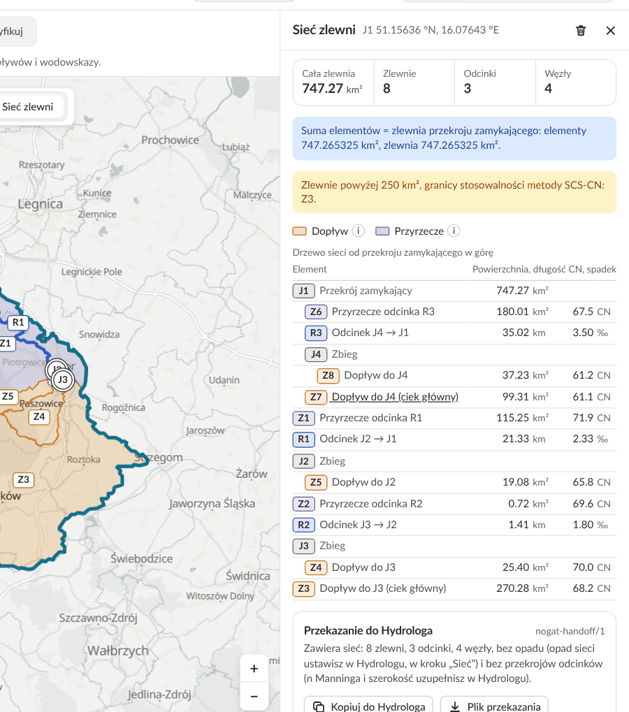

Przewodnik użytkownika
Hydrograf na mapie
Mapa, zlewnie, opad i odpływ — od pierwszego kliknięcia do własnych scenariuszy.
To wersja rozwojowa: wyniki, wygląd i funkcje mogą się jeszcze zmieniać. Masz uwagę? Przycisk „Zgłoś uwagę” jest na górnym pasku aplikacji.
Na start
Na start
Czym jest Hydrograf?
Hydrograf wyznacza z NMT zlewnię wskazanego przekroju, oblicza jej parametry fizjograficzne i CN z pokrycia terenu oraz grup glebowych HSG, a dla zlewni do 250 km² — hydrogram odpływu metodą SCS-CN z opadu projektowego PMAXTP. Wszystko na mapie w przeglądarce.
Wystarczy przeglądarka — na komputerze lub telefonie. Nie trzeba znać programów do map (GIS) ani wzorów: Hydrograf liczy sam, a znak (i) przy każdej wartości wyjaśnia, co ona znaczy.
Czego się spodziewać — a czego nie
Hydrograf da Ci
Granicę na mapie, powierzchnię, wysokości i spadki terenu, udział lasów, pól, łąk i zabudowy oraz rodzaje gleb.
Ile wody i jak szybko może spłynąć do wybranego miejsca po silnym deszczu — dla zlewni do 250 km².
Wykres wysokości wzdłuż dowolnej linii narysowanej na mapie.
Hydrograf nie jest
Nie korzysta z bieżących pomiarów ani prognoz pogody — nie powie, czy rzeka wyleje jutro. Ostrzeżenia hydrologiczne wydaje IMGW-PIB.
Wyniki to szacunki z uproszczonych modeli; prawdziwy przepływ może być wyraźnie inny. Do decyzji i projektów potrzebna jest ocena specjalisty.
Mapa głębokości wody to wstępny wynik dla jednej małej zlewni. Oficjalne mapy zagrożenia powodziowego publikują Wody Polskie.
Wersja rozwojowa: wygląd, funkcje i liczby mogą się jeszcze zmieniać.
Na jakie pytania odpowiada?
- Skąd spływa woda do tego miejsca?
- Granica zlewni na mapie.
- Jak duża jest zlewnia i jak ukształtowana?
- Powierzchnia, wysokości, spadki, kształt.
- Co pokrywa teren?
- Udział lasów, pól, łąk, zabudowy i wód oraz rodzaje gleb.
- Ile wody może spłynąć po ulewie?
- Hydrogram: największy przepływ, czas do jego wystąpienia, objętość wody.
- Jak wygląda teren wzdłuż linii?
- Profil terenu: wykres wysokości.
Kto może korzystać?
Skąd pochodzi woda zasilająca potok, mokradło czy staw i jakie tereny — lasy, pola, zabudowa — ją otaczają.
Wstępnie: skąd po ulewie spływa woda w stronę dróg i zabudowy, zanim zleci się dokładne obliczenia.
Hydrologia na prawdziwych danych — bez instalowania programów.
Szybki pierwszy szacunek parametrów zlewni i odpływu przed szczegółowym projektem.
Pierwszy wynik w trzech krokach
W panelu „Warstwy” (na telefonie przycisk „Warstwy” nad mapą) zaznacz „Linie spływu”. Niebieskie linie pokażą, którędy płynie woda.
Na pasku nad mapą wybierz „Wybierz zlewnię” i kliknij przy niebieskiej linii — w miejscu, dla którego chcesz poznać zlewnię.
Na mapie pojawi się granica zlewni, a w panelu „Zlewnia” — powierzchnia, wysokości, pokrycie terenu, a niżej deszcz i odpływ.
Gdzie są dane? Tylko w obszarze tej instancji Hydrografu. Mapa po otwarciu sama pokazuje ten obszar; poza nim Hydrograf nie wyznaczy zlewni.
Szczegóły każdej funkcji opisują kolejne rozdziały. Coś nie działa albo masz pomysł? Przycisk „Zgłoś uwagę” na górnym pasku.
Słowniczek
- Zlewnia
- Cały obszar, z którego deszcz spływa do wybranego miejsca na rzece; jej granica biegnie grzbietami wzniesień.
- Ciek
- Rzeka, potok lub rów, którym płynie woda.
- NMT
- Numeryczny model terenu — cyfrowa mapa wysokości, z której Hydrograf odczytuje, dokąd spływa woda.
- Linie spływu
- Drogi, którymi woda spływa po terenie, wyliczone z NMT; to na nich wskazuje się miejsce.
- Opad projektowy
- Umowny silny deszcz, np. taki, który zdarza się średnio raz na 100 lat.
- Hydrogram
- Wykres pokazujący, jak po deszczu rośnie i opada ilość wody płynącej w cieku.
01 · Zanim zaczniesz
Obszar danych i status wyników
Dane obejmują tylko obszar tej instancji Hydrografu. Po otwarciu mapa sama pokazuje ten obszar, a warstwy kończą się na jego granicy.
Kliknięcie w trybie „Wybierz zlewnię” poza liniami spływu kończy się komunikatem „Nie znaleziono zlewni cząstkowej w tym punkcie. Kliknij w obszarze pokrytym liniami spływu.” Profil przecinający granicę danych może pokazać 0 m na odcinku bez danych; profil całkiem poza nimi może zwrócić błąd.
To wersja rozwojowa: wartości i funkcje mogą się zmieniać. Hietogram i hydrogram powstają tylko dla zlewni do 250 km². Mapa głębokości wody SFINCS to wynik wstępny, do podmiany.
Zgubiłeś obszar? Ikona ramki „Przybliż do zasięgu warstw” w panelu „Warstwy” pokazuje zasięg włączonych warstw, a gdy żadna nie jest włączona — cały obszar danych.
02 · Orientacja
Co jest na ekranie?

Nazwa aplikacji i kontekst („Mapa / Zlewnia … km²”), przycisk „Zgłoś uwagę”, przycisk „Instrukcja” (otwiera najpierw okno powitalne), „Aplikacje” i motyw Auto · Jasny · Ciemny. „Aplikacje” to lista innych aplikacji ekosystemu (np. Hydrologa, Archiwisty), gdy ta instalacja Hydrografa je zna; każda otwiera się we własnej karcie.
Po lewej szyna Mapa · Logowanie i panel „Warstwy”, po prawej panel „Zlewnia” z wynikami; w trybie sieci po prawej panel „Sieć zlewni”.
Tryby pracy i podpowiedź; w trybie „Wybierz zlewnię” u góry mapy także wybór „Jedna zlewnia” · „Sieć zlewni”. Przy zwiniętym panelu pojawia się tu przycisk „Warstwy” lub „Zlewnia”.
Krawędź panelu przeciągnij, by zmienić szerokość; dwuklik przywraca domyślną, a przeglądarka zapamięta wybór. × w „Warstwach” zwija panel, × w „Zlewni” chowa go, a wynik zostaje na mapie (przycisk „Zlewnia” go przywraca); kosz w „Zlewni” czyści wynik.
Pod mapą pasek źródeł danych podaje źródła tego, co widać na mapie i w panelach: przy opadzie PMAXTP dwie linie IMGW-PIB, przy danych GUGiK (NMT, BDOT10k) i gleb SoilGrids krótko „Źródło: GUGiK (…)” i „Źródło: ISRIC SoilGrids, CC BY 4.0”. Przycisk „Źródła i warunki” otwiera ich pełne brzmienie z warunkami korzystania z danych; to samo pokazuje okno powitalne. W serwisie publicznym odnośnik „Regulamin” jest na dole lewego paska aplikacji (na telefonie na końcu dolnego paska), pod spisem treści tej instrukcji, na końcu listy „Aplikacje” oraz w oknach „Źródła i warunki” i powitalnym; regulamin otwiera się w nowej karcie.
Cztery tryby pracy

Przesuwaj mapę i przybliżaj ją kółkiem myszy lub przyciskami + i −. Kliknięcie niczego nie zaznacza; panel „Zlewnia” się zwija, wynik zostaje. W lewym dolnym rogu — współrzędne kursora (WGS84, PL-1992 lub PL-2000).
Kursor zmienia się w krzyżyk, a panel „Zlewnia” się otwiera; u góry mapy wybierasz, co wyznaczyć — domyślnie „Jedna zlewnia”. Kliknij przy linii spływu — Hydrograf wyznaczy zlewnię klikniętego odcinka (zobacz odpowiednią część).
Kliknij przekrój zamykający, potem ujścia dopływów i wodowskazy: po każdej zmianie mapa pokaże podgląd sieci, a znaczniki — węzły J (w zbiegu cieków) i P (poza zbiegiem). „Oblicz charakterystyki” poda parametry zlewni, odcinków i węzłów dla Hydrologa (rozdział 06). Zlewnia i sieć zostają, gdy przełączasz opcje; tryb wraca do opcji wybranej ostatnio.
Klikaj punkty linii; profil narysuje ponowne kliknięcie ostatniego punktu, dwuklik lub „Rysuj profil”. Backspace cofa punkt, Esc porzuca linię. Wykres — w szufladzie u dołu mapy (zobacz rozdział 08).
Kliknij miejsce: okienko poda współrzędne w trzech układach („Kopiuj”), wysokość, najbliższy ciek, pokrycie terenu z CN dla AMC I–III, glebę i sieć spływu, a z wynikiem SFINCS — głębokość wody.
Esc przerywa rysowanie, potem zamyka okienko punktu; gdy nic nie rysujesz, raz zwija panel „Zlewnia”, dwa razy szybko czyści wynik. W „Sieci zlewni” Esc tylko chowa panel.
03 · Warstwy
Panel „Warstwy”

Pole wyboru włącza warstwę, suwak ustawia krycie w %. Pełną nazwę skróconego wiersza pokaże najechanie kursorem.
Warstwy podkładowe (teren, wody, gleby, pokrycie), Wyniki analiz (linie spływu, wyniki modeli) i Podkłady kartograficzne — mapa tła, zawsze jedna, oraz nakładka „Mapa zagrożenia powodziowego”.
Ikona ramki obok tytułu panelu dopasowuje widok do włączonych warstw, a gdy żadna nie jest włączona — do całego obszaru danych.
NMT, linie spływu, grupy glebowe, pokrycie terenu, wynik SFINCS i mapa zagrożenia powodziowego mają legendę w lewym dolnym rogu mapy, dopóki są włączone.
„Kanalizacja deszczowa” pojawia się na liście tylko wtedy, gdy serwer ma dane kanalizacji — dla obecnego obszaru ich nie ma.
Co pokazują warstwy i podkłady
Warstwy podkładowe
- NMT (wysokości)
- Numeryczny model terenu GUGiK: wysokość kolorem, z cieniowaniem rzeźby; legenda podaje skalę barw w m n.p.m.
- Zbiorniki wodne (BDOT10k)
- Wody stojące z bazy topograficznej BDOT10k.
- Cieki BDOT10k
- Rzeki i potoki z bazy BDOT10k — z mapy, nie z NMT.
- Grupy glebowe (HSG)
- Hydrologiczne grupy gleb A–D, od przepuszczalnych do nieprzepuszczalnych.
- Pokrycie terenu (BDOT10k)
- Grunty orne, lasy, łąki, zabudowa, drogi, wody — z tych klas Hydrograf liczy CN.
- Zagłębienia
- Bezodpływowe obniżenia terenu wyznaczone z NMT.
Podkłady kartograficzne
- OpenFreeMap szary
- Domyślny podkład wektorowy w odcieniach szarości.
- OSM GUGiK szary (tylko Polska)
- OpenStreetMap z serwera GUGiK, w szarości.
- Ortofotomapa GUGiK
- Zdjęcia lotnicze Polski z serwera GUGiK.
- bez podkładu
- Same warstwy na jednolitym tle.
- Mapa zagrożenia powodziowego
- Nakładka nad podkładem: głębokość wody przy powodzi od rzeki według Wód Polskich — więcej tutaj.
Wyniki analiz
- Linie spływu
- Sieć wyliczona z NMT — więcej tutaj.
- Głębokość wody — SFINCS…
- Wynik modelu hydraulicznego — więcej tutaj.
Cieki BDOT10k pochodzą z mapy, a linie spływu Hydrograf wylicza z NMT — to na nich wyznacza zlewnie. Porównaj obie warstwy przed wyborem punktu.
Linie spływu i próg akumulacji spływu
Hydrograf wylicza je z NMT: woda z każdej komórki terenu spływa w dół stoku, a linia zaczyna się tam, gdzie zbiera się z dostatecznie dużej powierzchni. Na tej sieci wyznacza się zlewnie.
Im większa zlewnia powyżej danego miejsca, tym linia grubsza i ciemniejsza. Skala legendy „Linie spływu — zlewnia [km²]” biegnie od 0.001 do 20 km².
Najedź kursorem na linię: „Zlewnia” to powierzchnia w km², dalej „Rząd Strahlera” i „Długość” odcinka w km. Odcinki kończą się na połączeniach cieków.
Pole pod włączoną warstwą: 1 ha — gęstsza sieć, także bardzo małe zlewnie — albo 10 ha (domyślnie). Zlewnia jest wyznaczana na sieci z wybranym progiem.
Próg akumulacji spływu to najmniejsza powierzchnia, z której musi spływać woda, żeby powstała linia. Hydrograf podaje go w hektarach, a od 1 km² (100 ha) w km²: 1 ha = 10 000 m², 10 ha = 0,1 km².
Głębokość wody z modelu SFINCS

Największą głębokość wody w każdym miejscu w symulacji modelem hydraulicznym 2D SFINCS: zlewnia Kamiennika (ok. 37 km²), opad PMAXTP na 24 h przy p = 1%. To warstwa dla jednej zlewni i jednego scenariusza, nie prognoza.
„Maks. głębokość wody [m]”: 0,05–0,2 · 0,2–0,5 · 0,5–1 · 1–2 · > 2. Domyślne krycie — 80 %.
Co pokazuje warstwa, jak ją czytać i z jakich danych powstała.
36 h symulacji: 24 h opadu (134,5 mm, rozkład Beta) i 12 h recesji. Siatka 5 m na NMT 5 m bez zmian, szorstkość Manninga i CN z pokrycia terenu BDOT10k i grup glebowych SoilGrids, bez kalibracji; koryta nie są wpalone w NMT, stawy są na starcie puste.
WYNIK WSTĘPNY, nie do projektowania i nie oficjalna mapa zagrożenia powodziowego — porównaj go z warstwą MZP. Opad spada na całą siatkę modelu, a MZP liczono dla przepływu w rzece, więc warstwa obejmuje znacznie więcej terenu. Zapora zbiornika Świerzawa nie ma w modelu upustu dennego ani przelewu: od ok. 28,6 h woda przelewa się przez najniższy punkt korony zapory w NMT (281,16 m n.p.m.), choć rzeczywisty przelew (korona 279,63 m n.p.m.) zadziałałby po ok. 20 h, więc poziom wody w zbiorniku jest zawyżony. W 24 punktach MZP zwierciadło wody leży średnio ok. 0,9 m wyżej niż na MZP, głównie przez dużą szorstkość lasu i łąki w korytach.
Mapa zagrożenia powodziowego (MZP)

Oficjalna mapa Wód Polskich z systemu ISOK: gdzie i jak głęboko stanie woda, gdy wyleje rzeka. Hydrograf pobiera ją wprost z serwera Wód Polskich.
Szansa na taką powódź w każdym roku: 10 % — średnio raz na 10 lat, 1 % — raz na 100 lat, 0,2 % — raz na 500 lat (rzadka, najwięcej wody). „Raz na 100 lat” nie znaczy „co 100 lat” — może przyjść dwa lata z rzędu.
W „Podkładach kartograficznych” zaznacz „Mapa zagrożenia powodziowego” i wybierz prawdopodobieństwo. Mapa leży nad podkładem i NMT, ale pod wynikiem SFINCS.
Głębokości widać po przybliżeniu mapy (od skali ok. 1:50 000) i tylko przy rzekach objętych mapami Wód Polskich. Dane: Wody Polskie / ISOK, licencja CC BY 4.0.
04 · Zlewnia
Wyznacz zlewnię w trzech krokach
W panelu „Warstwy” włącz „Linie spływu” i przybliż mapę do wybranego cieku.
Włącz tryb „Wybierz zlewnię” (u góry mapy „Jedna zlewnia”) i kliknij przy linii. Ujście wypadnie na dolnym końcu klikniętego odcinka — zwykle na najbliższym połączeniu cieków poniżej.
Zlewnie cząstkowe zapalają się od ujścia w górę i pulsują, aż serwer scali granicę — przy setkach km² nawet ponad minutę. Wynik trafi do panelu „Zlewnia”.
Przy zbiegu cieków przybliż mapę do poziomu pojedynczych budynków (zoom ≥ 15) — kilka metrów decyduje, który odcinek zostanie wybrany. Potem sprawdź znacznik ujścia na mapie i współrzędne w tytule panelu.
Nowe kliknięcie od razu zastępuje poprzedni wynik. Poza obszarem danych panel pokaże „Błąd: Nie znaleziono zlewni cząstkowej w tym punkcie…”.
Wynik na mapie i w panelu
Na mapie
- Granica zlewni — kontur z jasnym wypełnieniem; mapa sama się do niej przybliża.
- Ujście — kółko; po najechaniu „Ujście: … m n.p.m.”.
- Ciek główny — odcinki zgodne z ciekami BDOT10k grubsze, pozostałe cieńsze i bledsze.
- Najdłuższa droga spływu — od najdalszego punktu zlewni do ujścia.
- Najdłuższa droga spływu od granicy zlewni — od najdalszego punktu na granicy zlewni do miejsca, gdzie łączy się z najdłuższą drogą spływu; tylko gdy zaczyna się w innym punkcie.
W panelu „Zlewnia”
Powierzchnia [km²], CN, Wys. średnia [m n.p.m.] i Spadek [%] — zawsze na górze panelu.
Parametry podstawowe, Wskaźniki kształtu, Rzeźba terenu, Sieć rzeczna, Pokrycie terenu, Grupy glebowe (HSG), Hietogram, Hydrogram. Kliknij nagłówek, by rozwinąć; po prawej skrót, np. liczba wierszy, „HI …”, „rząd …”.
Legenda „Zlewnia” w lewym dolnym rogu mapy objaśnia symbole, które są na mapie, i znika po wyczyszczeniu wyniku. Kolory: granica i ujście — morski kolor Hydrografa, ciek główny — niebieski, drogi spływu — pomarańczowe. Hietogram i Hydrogram pojawiają się tylko dla zlewni do 250 km².
Parametry podstawowe i wskaźniki kształtu
1 · Parametry podstawowe
- Wymiary
- Powierzchnia zlewni [km²], Obwód zlewni, Długość zlewni, Średnia szerokość [km].
- Wysokości
- Wysokość min., max. i średnia [m n.p.m.] z NMT.
- Spadki
- Średni spadek terenu i Spadek cieku głównego [%].
- Ciek i drogi spływu
- Długość cieku głównego, Długość cieku wg BDOT10k, Najdłuższa droga spływu z jej spadkiem, Spływ powierzchniowy – długość i spadek, Najdłuższa droga spływu od granicy zlewni [km].
- CN (krzywa odpływu)
- Średnia ważona CN kompleksów glebowo-roślinnych dla AMC II: klas pokrycia terenu BDOT10k na grupach glebowych HSG, z tablic TR-55.
- Ujście
- Szerokość φ, długość λ [°] i wysokość [m n.p.m.].
2 · Wskaźniki kształtu (bez jednostek)
- Cz zwartości
- Obwód zlewni do obwodu koła o tej samej powierzchni; dla koła 1.
- Ck kolistości
- Powierzchnia zlewni do powierzchni koła o tym samym obwodzie.
- Cw wydłużenia
- Średnica koła o powierzchni zlewni do długości zlewni.
- Cf formy
- Powierzchnia zlewni do kwadratu jej długości.
- Cl lemniskaty
- Koło o średnicy równej długości zlewni do powierzchni zlewni.
Wiersze bez wartości są pomijane. Wydłużona zlewnia daje zwykle niższą i późniejszą falę niż zwarta. Wskaźniki zależne od obwodu bywają niespójne (np. Cz < 1), bo wygładzona granica jest krótsza niż obrys komórek NMT, z których liczy się powierzchnię — szczegóły w (i).
Rzeźba, sieć rzeczna, pokrycie i gleby

Dla każdej wysokości pokazuje, jaka część powierzchni zlewni leży wyżej (oś „Pow. powyżej [%]”). Pole pod krzywą to całka HI, podana też w nagłówku sekcji: im wyższa, tym więcej terenu wysoko nad ujściem.
Wsk. rzeźby R i Spadek działu wodnego Rp [‰]: deniwelacja zlewni odniesiona do pierwiastka z powierzchni i do obwodu.
Gęstość sieci Dd, Częstość cieków Fs, Liczba chropowatości Rn, Max rząd Strahlera, Pokrycie BDOT — z odcinków zgodnych z ciekami BDOT10k; bez nich „brak cieków BDOT”.
Słupki z udziałem klas pokrycia terenu (grunty orne, lasy, łąki i pastwiska, zabudowa, drogi, wody, inne) i grup glebowych A–D; sekcja HSG — tylko przy danych gleb.
Objaśnienia (i)

Przy wierszach parametrów, przy Qmax, tp, V i bilansie opadu, przy polach hietogramu i hydrogramu, przy wynikach analiz w panelu „Warstwy” oraz w „Sieci zlewni” — przy rodzajach zlewni i parametrach odcinka.
Kliknij (i) albo dojdź do niego klawiszem Tab i naciśnij Enter lub spację; na telefonie dotknij (i). Ponowne kliknięcie, kliknięcie obok lub Esc zamyka objaśnienie. Samo najechanie kursorem go nie otwiera.
Definicję z symbolem, wzór, „gdzie:” ze zmiennymi i jednostkami, „Jednostka:”, zdanie lub dwa o tym, jak odczytać wartość, i „Źródła:”. „Więcej w instrukcji” otwiera w nowej karcie dłuższe objaśnienie z części „Objaśnienia wielkości i metod”.
Pod polami „Model UH”, „Metoda Tc” i „Estymacja Nash” zawsze widać „Zakres stosowalności” wybranej opcji.
05 · Opad i odpływ
Hietogram: scenariusz opadu PMAXTP

Suma opadu z atlasu PMAXTP (IMGW-PIB), średnia w zlewni z punktów siatki co 2 km ważonych wielobokami Thiessena. Czas trwania 5 min–72 h (domyślnie 24 h), prawdopodobieństwo 0,01–99,9 % (domyślnie 1 %); p = 1 % to okres powtarzalności 100 lat.
Podział sumy na kroki po 5 min: Beta (α, β; domyślnie szczyt w 0,2 czasu trwania), DVWK (Euler II) — szczyt w 1/3 czasu, Blokowy — stałe natężenie.
I — suche, II — przeciętne (domyślne), III — mokre. AMC przelicza CN zlewni, a z nim straty, opad efektywny i cały hydrogram.
Wykres „Opad” pokazuje opad całkowity i efektywny oraz szczyt Pmax. Pod nim bilans: sumy opadów, skąd opad PMAXTP (liczba punktów), wsp. odpływu, CN użyty (z AMC), S i Ia. „Eksport”: hietogram CSV lub JSON, punkty PMAXTP z wagami jako GeoJSON.
Każda zmiana pola przelicza hietogram i hydrogram po chwili — nie ma przycisku „Oblicz”. Pole „Współczynnik redukcji obszarowej (własny)” jest domyślnie puste (bez redukcji); wpisana wartość 0–1 mnoży opad PMAXTP.
Własna seria opadu zamiast PMAXTP

W „Hietogramie” wybierz „Własna seria”. Czas trwania i krok [min] tworzą tabelę: czas trwania to wielokrotność kroku, krok do 1440 min, najwyżej 2000 kroków. „Czas [min]” to koniec kroku.
W „Opad [mm]” wpisz wysokość opadu w kroku (≥ 0, suma > 0) — nie natężenie w mm/h. Kolumnę z arkusza wklejasz od wybranej komórki w dół.
Jedna kolumna — opad z bieżącym krokiem; dwie — czas [min] i opad [mm] w równych odstępach. Separator , ; lub tabulator; nagłówek jest pomijany; przy ; i tabulatorze działa przecinek dziesiętny.
„Wczytaj z bieżącego hietogramu” kopiuje ostatni hietogram PMAXTP, „Wyczyść” opróżnia tabelę. Seria dotyczy jednej zlewni — nowa zlewnia ją czyści.
Błąd, np. czas trwania niebędący wielokrotnością kroku albo ujemny opad w wierszu, pokazuje czerwony komunikat; do czasu poprawy hydrogram nie jest przeliczany.
Własny opad z arkusza lub pliku CSV
Kolumna opadu w równych krokach — wysokość w kroku [mm], nie natężenie [mm/h]; w CSV opcjonalnie kolumna czasu [min].
Wyznacz zlewnię, w sekcji „Hietogram” wybierz „Własna seria” i ustaw „Krok czasowy [min]” jak w danych.
Kliknij pierwszą komórkę kolumny „Opad [mm]” i wklej dane (Ctrl+V) — czas trwania sam się wydłuży. Albo użyj „Importuj CSV”.
„Wklejono … wartości od wiersza 1…” i „Suma: … mm · … kroków po … min”. Czerwony komunikat powie, co poprawić.
Przeliczy się sam. To odpowiedź na to jedno zdarzenie — bez przypisanego prawdopodobieństwa.
Start od opadu projektowego: „Wczytaj z bieżącego hietogramu” kopiuje do tabeli ostatni hietogram PMAXTP tej zlewni — potem zmieniaj wartości.
Hydrogram: model, czas koncentracji, wynik

Hydrogram jednostkowy zamienia opad efektywny w przepływ: SCS (domyślny); Nash — kaskada zbiorników, „Estymacja Nash”: Lutz lub Regresja urban.; Snyder — z długości cieku i odległości Lc, ze współczynnikami Ct i Cp.
Czas koncentracji dla SCS: NRCS (SCS Lag), Kirpich, Giandotti, FAA (spływ pow.), Kerby, Kerby-Kirpich. Każdą liczy Hydrolog z danych, które podaje jej źródło, bez zastępników — najdłuższa droga spływu i jej spadek oraz spływ powierzchniowy pochodzą z wyznaczenia zlewni. FAA wymaga „C (spływ)” z tabeli FAA, obie metody Kerby’ego — „N (opór)” z tabeli Kerby’ego; pola są puste, dopóki ich nie wypełnisz. Snyder liczy własny czas opóźnienia z L i Lc — wybór metody Tc nie zmienia jego wyniku.
Qmax — przepływ maksymalny [m³/s], tp — czas do szczytu [min], V — objętość odpływu [m³]; wykres „Hydrogram odpływu” i tabela: Metoda Tc, Tc, Hydrogram jedn. (dla Nasha także N i K, a dla metody Lutza udział lasów W i terenów zurbanizowanych U z pokrycia terenu zlewni).
Pod wyborem: dla jakich zlewni powstała metoda (np. Kirpich — małe zlewnie rolnicze, Giandotti — duże). Aplikacja nie ostrzega o przekroczeniu zakresu — oceń to sam.
Hydrogram powstaje tylko dla zlewni do 250 km²; dla większych sekcje „Hietogram” i „Hydrogram” nie pojawiają się — bez komunikatu.
Porównaj uwilgotnienie AMC
Wyznacz zlewnię do 250 km². W „Hietogramie” wybierz czas trwania, prawdopodobieństwo i rozkład — i nie zmieniaj ich do końca porównania.
Przy „II — przeciętne” zanotuj z bilansu „Opad efektywny” i „CN użyty”, a z sekcji „Hydrogram” — Qmax, tp i V.
Wybierz „I — suche”, potem „III — mokre”. Wyniki przeliczą się same — zanotuj te same wartości.
Mokra zlewnia (III): wyższy CN, mniejsza retencja S i mniejsze straty Ia, więcej opadu efektywnego, wyższe Qmax i V. Sucha (I) — odwrotnie.
Przy AMC I i niewielkim opadzie odpływ może wyjść zerowy — cały opad mieszczą straty początkowe Ia. CN dla AMC I i III jest zaokrąglany do liczby całkowitej.
To samo porównanie działa dla własnej serii opadu, a tryb zaawansowany pozwala osobno sprawdzić wpływ samego CN.
Tryb zaawansowany: własne dane wejściowe

W sekcji „Hydrogram” włącz „Tryb zaawansowany”: 15 pól z wartościami zlewni (powierzchnia, obwód, długość, wysokości, spadki, ciek główny, najdłuższa droga spływu i jej spadek, spływ powierzchniowy — długość i spadek, odległość do środka ciężkości Lc, CN) z dokładnością wyników.
Wpisz własną wartość — hydrogram przeliczy się po chwili. Pole dostaje znacznik „zmieniono” i podpis „Hydrograf: …”, przy przełączniku pojawia się licznik „Zmienione: N”, a nad wykresem — lista zmian.
Strzałka przy polu cofa jedną zmianę, „Przywróć dane z Hydrografa” — wszystkie. Po wyłączeniu trybu wynik wraca do danych Hydrografa, a wpisy czekają na ponowne włączenie.
Przy błędnym polu pojawia się opis, np. „Wartość musi być dodatnia.” albo „CN: liczba od 1 do 100 (np. 68.4).” — do poprawy hydrogram nie jest przeliczany.
Zmiany dotyczą tylko hietogramu i hydrogramu, nie panelu parametrów. Gdy Snyder zgłasza „Model Snydera wymaga …”, wpisz tutaj Lc.
Przekazanie do Hydrologa
Pod sekcjami panelu „Zlewnia” jest część „Przekazanie do Hydrologa”. Opisuje, co przekaże: parametry zlewni, a gdy hydrogram jest obliczony — także opad, model i wynik.
„Kopiuj do Hydrologa” kładzie przekazanie (JSON nogat-handoff/1) do schowka, „Plik przekazania” pobiera je jako plik <nazwa>.handoff.json. Idzie to, co pokazuje panel, także zmiany trybu zaawansowanego.
W „Hydrogramie zlewni” Hydrologa: „Wczytaj z Hydrografa”, a w nim „Wklej ze schowka” albo „Plik przekazania…”. Gdy ta instalacja zna adres Hydrologa, komunikat po skopiowaniu lub zapisie ma link „Otwórz Hydrologa”. Opad PMAXTP otwiera się z punktem i wysokością z Hydrografa.
Hydrolog liczy hydrogram sam i stawia Qmax, czas do szczytu i objętość obok wyniku Hydrografa, z wersją Hydrologa, którą liczył każdy z nich.
Gdy przeglądarka nie daje dostępu do schowka (strona otwarta przez zwykłe HTTP), pojawia się pole z zaznaczonym tekstem przekazania: skopiuj go Ctrl+C. Czas koncentracji przechodzi jako liczba, bo Hydrograf liczy go po najdłuższej drodze spływu. Samą zlewnię, bez obliczonego hydrogramu, Hydrolog na razie odrzuca („nie ma opadu”). Całą sieć z „Wybierz zlewnię” → „Sieć zlewni” przekazują te same przyciski — więcej tutaj.
06 · Sieć zlewni
Sieć zlewni: przekrój zamykający, punkty, podgląd

Na pasku nad mapą włącz „Wybierz zlewnię”, a u góry mapy — „Sieć zlewni”. Punkty trafią na najbliższy ciek progu warstwy „Linie spływu” w promieniu 100 m.
Pierwsze kliknięcie stawia przekrój zamykający na cieku — dół całej sieci. Sam przekrój też jest siecią; w zbiegu cieków dzieli zlewnię na cieki, które się w nim łączą.
Kolejne kliknięcia (najwyżej 30) — ujścia dopływów i wodowskazy; do czasu podglądu nowy znacznik dostaje pierwszy wolny numer P. Każdy punkt ma w panelu „Nazwa (opcjonalnie)” i „Usuń”; znacznik przeciągniesz.
Chwilę po każdej zmianie punktów znaczniki przeskoczą na cieki („w węźle sieci”, „na cieku, … m od kliknięcia”) i dostaną identyfikatory swoich węzłów: J w zbiegu, P poza nim, numerowane od przekroju zamykającego (J1 albo P1) w górę. Mapa i panel pokażą zlewnie Z, odcinki R i węzły.
Możesz wskazać punkt także na narysowanym odcinku (np. wodowskaz). Punkt poza zlewnią przekroju zamykającego albo z dala od cieku jest oznaczany jako odrzucony; drugi punkt w tym samym węźle powoduje błąd podglądu — usuń jeden z nich albo przesuń dalej niż 50 m od zbiegu. Punkt do 50 m od zbiegu przechodzi do niego: jeden punkt w zbiegu już dzieli zlewnię na cieki, które się w nim łączą. Zlewnie Z są dwóch rodzajów: dopływ (zlewnia cieku powyżej węzła, do którego ciek wpływa bez odcinka, także na rzece głównej) i przyrzecze odcinka. Przerywana granica i znacznik z „≈”: punkt leży wewnątrz zlewni elementarnej (1 ha), dokładną granicę poda „Oblicz charakterystyki” (rozdział 06). Nazwa punktu nie zmienia podglądu.
Charakterystyki sieci i przekazanie do Hydrologa


Wystarczy przekrój zamykający bez błędu podglądu; punkty powyżej niego są opcjonalne. Na mapie gruba granica „Zlewnia (całość)” obejmuje całą sieć. Panel podaje „Cała zlewnia”, liczbę zlewni, odcinków i węzłów, kontrolę „Suma elementów = zlewnia przekroju zamykającego” i „Drzewo sieci od przekroju zamykającego w górę”: węzły J i P (przekrój zamykający z powierzchnią całej zlewni; węzeł, który wpływa do innego bez odcinka, jako „J4 → J1”), zlewnie Z (Dopływ, Przyrzecze — każdy rodzaj z (i)) z powierzchnią i CN, odcinki R z długością i spadkiem [‰]. Każdą gałąź czyta się tak samo: przyrzecze, odcinek, węzeł wyżej; pod węzłem, wcięte o krok, idą cieki, które się w nim łączą, a potem rzeka główna na tym samym poziomie — gałąź jest cała, zanim zacznie się następna.
Kliknij etykietę na mapie (Z1, R1, …) albo wiersz drzewa, który też przybliża mapę. Zlewnia pokaże parametry w sekcjach jak w „Wybierz zlewnię”, bez hietogramu i hydrogramu; odcinek — długość, spadek, NMT na końcach i długość wzdłuż BDOT10k. W podglądzie — rodzaj, powierzchnię lub długość i węzeł poniżej. „Odznacz” zdejmuje wybór.
Przeciągnięcie, dodanie lub usunięcie punktu albo zmiana progu „Linii spływu” daje komunikat „Charakterystyki są nieaktualne…”: mapa i panel wracają do podglądu nowych punktów, a przekazanie jest wyłączone do ponownego „Oblicz charakterystyki”. Zmiana nazwy wyłącza tylko przekazanie. Gdy punkty wrócą, wrócą charakterystyki. „Wyczyść” usuwa punkty i sieć.
„Kopiuj do Hydrologa” albo „Plik przekazania” przekazują całą sieć z przekroju zamykającego do wylotu O w Hydrologu. W Hydrologu można dalej obliczać przepływ w węzłach i odcinkach; opis przekazania jest też w rozdziale „Opad i odpływ”.
Esc w „Sieci zlewni” tylko chowa panel — punkty i sieć zostają. „Jedna zlewnia” albo inny tryb zdejmuje sieć z mapy, powrót do „Sieci zlewni” ją przywraca; „Wybierz zlewnię” wraca do opcji wybranej ostatnio. Punkty, które serwer odrzucił, są zaznaczone na mapie i na liście.
07 · Krok po kroku
Odczytaj wynik SFINCS
W „Warstwach” zaznacz „Głębokość wody — SFINCS, opad 24 h, p = 1%”. W lewym dolnym rogu mapy pojawi się legenda.
Wyłącz inne warstwy i kliknij „Przybliż do zasięgu warstw” — mapa pokaże zasięg modelu, czyli zlewnię Kamiennika.
Kolor porównaj z legendą „Maks. głębokość wody [m]”. Zmniejsz krycie albo wybierz „Ortofotomapa GUGiK”, by zobaczyć teren pod wodą.
Kliknij (i) przy nazwie warstwy: co pokazuje, jak ją czytać i z jakich danych powstała. Na telefonie dotknij (i).
Włącz „Linie spływu” lub „Cieki BDOT10k”. Rozległe płytkie plamy na zboczach to woda opadu spływająca po całej siatce modelu — założenia symulacji opisuje podrozdział o warstwie.
Traktuj mapę jako podgląd metody, nie zasięg zalewu. Jeśli coś wygląda nie tak — zgłoś uwagę.
Wynik wstępny, bez kalibracji: poziom wody w zbiorniku Świerzawa jest zawyżony, a w korytach zwierciadło leży średnio wyżej niż na MZP. Ta warstwa nie służy do projektowania ani do oceny ryzyka dla konkretnych budynków.
Hydrogram a mapa SFINCS — dwa różne wyniki
| Hydrogram (Hydrograf) | Mapa głębokości (SFINCS) | |
|---|---|---|
| Co pokazuje | Przepływ w ujściu w czasie: Qmax, tp, V. | Największą głębokość wody w każdym miejscu zlewni. |
| Model | Hydrologiczny: straty SCS-CN i hydrogram jednostkowy (SCS, Nash, Snyder). | Hydrauliczny 2D: przepływ wody po siatce 5 m z NMT. |
| Czas | Cały przebieg fali: przepływ w kolejnych minutach. | Na mapie tylko maksimum z całej symulacji, bez przebiegu w czasie. |
| Zakres | Każda wyznaczona zlewnia do 250 km², liczony na żądanie. | Jedna zlewnia (Kamiennik) i jeden scenariusz, policzone raz poza aplikacją. |
| Dane wejściowe | Opad PMAXTP uśredniony w zlewni lub własna seria; CN z pokrycia terenu, przeliczany wg AMC. | Opad PMAXTP 24 h, p = 1%, model SFINCS; NMT, BDOT10k i HSG. Scenariusz modelu jest stały. |
| Status | Wersja rozwojowa — sprawdzaj „Zakres stosowalności”. | Wynik wstępny, bez kalibracji; poziom wody w zbiorniku Świerzawa zawyżony. |
Porównanie scenariuszy dla Kamiennika: zlewnię wyznacz przy ujściu do Kaczawy (ok. 51,0154°N, 15,8899°E; ok. 37 km²). PMAXTP 24 h, p = 1% w Hydrografie jest uśredniany dla zlewni; gotowa warstwa SFINCS przedstawia osobną symulację tego deszczu. Zestawiaj zasięg i czas, ale nie utożsamiaj punktowej głębokości z przepływem w ujściu.
08 · Profil terenu
Przekrój terenu wzdłuż linii

Na pasku nad mapą; pomaga warstwa „NMT (wysokości)”. Pojawi się pasek rysowania z licznikiem punktów.
Kliknięcie (dotknięcie) dodaje punkt; „Cofnij” lub Backspace usuwa ostatni, „Anuluj” lub Esc porzuca linię.
Kliknij lub dotknij ponownie ostatni punkt, kliknij dwukrotnie albo naciśnij „Rysuj profil” (min. 2 punkty). Szuflada pokaże długość, wysokości i wykres.
Najechanie na wykres wskaże miejsce na linii. Kliknięcie mapy zaczyna nową linię; × w szufladzie zamyka profil.
Wykres ma zawsze 100 punktów — przy długiej linii drobne formy terenu znikają. Część linii poza obszarem danych spada do 0 m; linia całkiem poza nim daje „Nie udało się pobrać profilu terenu”. Woda na wykresie: gdy w panelu „Warstwy” jest włączony wynik modelu (np. SFINCS), a linia przecina zalany teren, wykres pokaże wodę na niebiesko — do najwyższego poziomu z symulacji. Najechanie na wodę poda poziom wody i głębokość.
09 · Telefon i motyw
Na telefonie i po zmroku

Przy szerokości do 860 px szyna nawigacji Mapa · Logowanie staje się dolnym paskiem. W górnym pasku pozostają ikony: „Zgłoś uwagę”, „Instrukcja” (okno powitalne), „Aplikacje” (lista rozwija się pod paskiem) i przełącznik motywu.
„Warstwy” i „Zlewnia” (w „Sieci zlewni” — „Sieć”) wysuwają się od dołu, zawsze jeden naraz. Otwierają je przyciski na pasku nad mapą, zamyka uchwyt u góry arkusza; po wyznaczeniu zlewni arkusz „Zlewnia” otwiera się sam.
Przy 390 px cztery tryby mieszczą się nad mapą w dwóch wierszach. Podpowiedzi trybu są ukryte. Profil narysujesz, dotykając kolejnych punktów linii; sieć zlewni — wskazując przekrój zamykający i potem punkty powyżej.
Auto (jak w systemie), Jasny lub Ciemny — linie na mapie, legendy i wykresy zmieniają kolory razem z motywem. Przeglądarka zapamięta wybór, także dla administracji i tej instrukcji.
10 · Zgłoś uwagę
Jak przekazać uwagę?
Kliknij „Zgłoś uwagę” na górnym pasku strony z mapą; na telefonie to ikona dymka.
W polu „Wiadomość” podaj miejsce na mapie, wykonane kroki, oczekiwany wynik i to, co się stało. Wiadomość jest wymagana (do 5000 znaków).
Nie wpisuj danych osobowych. Jeśli chcesz odpowiedzi, napisz na adres e-mail operatora, który serwis publiczny podaje pod polem. Zgłoszenie zawiera tylko widok (tryb mapy), jego parametry i wersję aplikacji: bez kontaktu, bez adresu IP i bez danych przeglądarki.
Po „Wyślij” formularz się blokuje i pojawia się podziękowanie; okno zamknie się samo po 2 s, chyba że w nim klikasz lub piszesz. „Anuluj”, × lub Esc zamykają je bez wysyłania.

11 · Pomoc
Gdy coś nie działa
- „Nie znaleziono zlewni cząstkowej w tym punkcie”
- Sprawdź obszar danych i włącz „Linie spływu” w panelu „Warstwy”. Przybliż mapę, a potem kliknij bliżej widocznej linii.
- Dwa punkty sieci w tym samym węźle
- Węzeł J już dzieli zlewnię na cieki, które się w nim łączą. Usuń drugi punkt albo przesuń go dalej niż 50 m od zbiegu; dotyczy to także przekroju zamykającego.
- Charakterystyki sieci nieaktualne
- Po przesunięciu, dodaniu lub usunięciu punktu oraz po zmianie progu spływu mapa wraca do podglądu. Naciśnij ponownie „Oblicz charakterystyki”, aby uaktualnić wynik i przekazanie.
- Brak hietogramu i hydrogramu
- Te sekcje powstają tylko dla zlewni do 250 km². Dla większej zlewni odczytaj pozostałe parametry lub wybierz mniejszą.
- Nieprawidłowa własna seria opadu
- Popraw pole lub wiersz wskazany czerwonym komunikatem: czas trwania ma być wielokrotnością kroku, wysokości opadu nie mogą być ujemne, a suma musi być dodatnia. Do poprawy hydrogram się nie przeliczy.
- Mapa głębokości wody nie wygląda jak oficjalna mapa zagrożenia
- Warstwa SFINCS to osobna symulacja dla Kamiennika, opadu 24 h i p = 1%, a nie mapa MZP Wód Polskich. Przeczytaj (i) przy nazwie warstwy i porównaj scenariusze przed wyciągnięciem wniosków.
- Coś nadal działa źle?
- Przycisk „Zgłoś uwagę” na górnym pasku otwiera formularz; podaj miejsce, kroki i oczekiwany wynik, bez danych osobowych. Zgłoszenie zabiera ze sobą tylko widok, jego parametry i wersję aplikacji.
12 · Objaśnienia
Objaśnienia wielkości i metod
Dłuższe objaśnienia wielkości z panelu „Zlewnia”, pól i wyników hietogramu i hydrogramu oraz elementów „Sieci zlewni”: z czego się je liczy, co z nich wynika dla odpływu, kiedy metoda ma zastosowanie i na jakich źródłach się opiera. Objaśnienie (i) podaje krótko definicję, wzór, sposób odczytu i źródła, a „Więcej w instrukcji” prowadzi do jego podrozdziału w tej części.
Parametry podstawowe
Powierzchnia zlewni
Większa zlewnia reaguje wolniej, bo drogi spływu są w niej dłuższe; dlatego szczyt rośnie wolniej niż proporcjonalnie do .
W Hydrografie skaluje hydrogram jednostkowy każdego modelu (przy tych samych parametrach czasowych szczyt jest proporcjonalny do ) i wchodzi do wzoru Giandottiego oraz regresji urbanizacyjnej.
Źródła: Chow i in. 1988; USDA-NRCS 2007 (NEH 630-16); USDA-NRCS 2010 (NEH 630-15)
Obwód zlewni
Zmierzona długość granicy zależy od skali mapy lub rozdzielczości NMT i od uogólnienia granicy. Uproszczenie i wygładzenie usuwają schodki rastra, więc obwód jest krótszy niż obrys komórek NMT.
W Hydrografie obwód wchodzi tylko do wskaźników , i ; nie jest daną wejściową metod ani modeli hydrogramu.
Źródła: Bendjoudi i Hubert 2002; Baścik 2006
Długość zlewni
W klasycznych wskaźnikach kształtu (Schumm, Chorley) długość zlewni to odcinek prosty; droga spływu jest dłuższa, więc wartości wskaźników nie są wprost porównywalne z literaturą.
W Hydrografie wchodzi do wskaźników kształtu , , i do średniej szerokości . Metody Tc nie biorą : NRCS, Kirpich i Kerby-Kirpich używają najdłuższej drogi spływu (gdy jest zmierzona – ta sama wartość), a Giandotti – tylko długości cieku głównego .
Źródła: USDA-NRCS 2010 (NEH 630-15); Baścik 2006; Schumm 1956
Wysokość minimalna
W analizach hydrologicznych za wysokość minimalną przyjmuje się często rzędną zwierciadła wody w przekroju zamykającym przy najniższym stanie; Hydrograf bierze najniższą komórkę NMT.
W Hydrografie to punkt odniesienia deniwelacji we wskaźnikach rzeźby (, , , ), deniwelacji w metodzie Giandottiego i spadku najdłuższej drogi spływu (Kirpich, Kerby-Kirpich).
Źródła: Baścik 2006; Giandotti 1934 (za Grimaldi i in. 2012); KZGW 2017
Wysokość maksymalna
W Hydrografie deniwelacja wchodzi do wskaźników rzeźby i liczby chropowatości; nie wchodzi do obliczeń ani hydrogramu.
Źródła: Baścik 2006; Patton i Baker 1976; Carlston 1963
Wysokość średnia
W Hydrografie wchodzi do tylko w metodzie Giandottiego () i do .
Źródła: Baścik 2006; Giandotti 1934 (za Grimaldi i in. 2012); Pike i Wilson 1971
Średni spadek terenu
W Hydrografie używa go tylko metoda Tc NRCS (spadek terenu równania opóźnienia). FAA, Kerby i Kerby-Kirpich biorą spadek odcinka spływu powierzchniowego, a Kirpich – spadek najdłuższej drogi spływu; średni spadek terenu żadnego z nich nie zastępuje.
Źródła: Baścik 2006; USDA-NRCS 2010 (NEH 630-15); USDA-NRCS 2007 (NEH 630-16)
Długość cieku głównego
Sieć cieków z NMT zaczyna się tam, gdzie powierzchnia spływająca do danego miejsca przekracza próg akumulacji, więc ciek nie sięga działu wodnego, a jego długość zależy od progu sieci. Snyder i Lutz mierzą ciek główny aż do działu wodnego, więc jest od tej długości krótsza.
Ciek główny nie musi biec najdłuższą drogą spływu: na rozwidleniu idzie w stronę dopływu o większej powierzchni zlewni, a najdłuższa droga spływu może iść dłuższym dopływem o mniejszej powierzchni. Dlatego i „Spływ powierzchniowy – długość” nie muszą dawać razem „Najdłuższej drogi spływu”; metoda Kerby-Kirpich bierze jako koryto wzdłuż najdłuższej drogi spływu, nie .
W Hydrografie długości cieku głównego używają metoda Tc Giandottiego oraz modele Snydera i Nasha (Lutz). Bez niej metoda Giandottiego zgłasza brak danych – długość zlewni jej nie zastępuje.
Źródła: KZGW 2017; Tarboton i in. 1991; Giandotti 1934 (za Grimaldi i in. 2012)
Długość cieku wg BDOT10k
Odcinek sieci z NMT uznaje się za ciek BDOT10k, gdy co najmniej 50 % jego długości leży nie dalej niż 25 m od cieku BDOT10k.
W Hydrografie to wartość informacyjna – nie wchodzi do obliczeń ani hydrogramu; w metodzie Kerby-Kirpich koryto zaczyna się tam, gdzie najdłuższa droga spływu dochodzi do sieci cieków z NMT („Spływ powierzchniowy – długość”). Udział w to „Pokrycie BDOT” w sekcji Sieć rzeczna.
Źródła: USDA-SCS 1986 (TR-55); Roussel i in. 2005
Spadek cieku głównego
Metoda Lutza zakłada spadek wyrównany (z równych pól pod i nad linią spadku), a nie spadek między końcami cieku.
W Hydrografie używa go tylko estymacja Nasha metodą Lutza (). Metody Tc Kirpich i Kerby-Kirpich biorą spadek najdłuższej drogi spływu , liczony od działu wodnego, a nie od źródła cieku.
Źródła: Kirpich 1940 (za Roussel i in. 2005); KZGW 2017; Baścik 2006
Najdłuższa droga spływu
Najdalsza hydraulicznie komórka NMT zlewni to ta o największej odległości spływu do ujścia. Leży na grzbiecie – zwykle na dziale wodnym, ale może leżeć na grzbiecie wewnątrz zlewni, między dwiema dolinami.
W Hydrografie to długość metod NRCS i Kirpicha; w Kerby-Kirpich koryto ma długość , więc musi być większa od długości spływu powierzchniowego. Można ją zmienić w trybie zaawansowanym.
Źródła: USDA-NRCS 2010 (NEH 630-15); Roussel i in. 2005; USDA-SCS 1986 (TR-55)
Spadek najdłuższej drogi spływu
U Kirpicha spadek to różnica wysokości najdalszego punktu zlewni i ujścia podzielona przez długość drogi wody między nimi; w Kerby-Kirpich to spadek cieku głównego od działu wodnego do ujścia, liczony na całej tej drodze.
Najdalszy punkt nie musi być najwyższym, więc nie jest deniwelacją zlewni podzieloną przez ; nie jest też spadkiem cieku głównego , który liczy się od źródła cieku w sieci z NMT. Wysokości pochodzą z NMT z wypełnionymi zagłębieniami. Pusta wartość – brak wysokości początku drogi albo spadek nie jest dodatni; Hydrograf nie podstawia wtedy innego spadku.
W Hydrografie to spadek metody Kirpicha i części korytowej Kerby-Kirpich (w Kerby-Kirpich poniżej 0,002 Hydrolog zwiększa go o 0,0005). Można go zmienić w trybie zaawansowanym.
Źródła: Kirpich 1940 (za Fang i in. 2005 i Mota i Kobiyama 2015); Roussel i in. 2005; TxDOT 2019
Spływ powierzchniowy – długość
Odcinek zaczyna się w punkcie zlewni najdalszym hydraulicznie i biegnie po kierunkach spływu z NMT. W metodzie Kerby’ego to droga od najdalszego punktu do wyraźnego koryta, w metodzie FAA – do wpustu.
Koniec odcinka zależy od progu sieci cieków: im większy próg, tym dalej od działu wodnego zaczyna się sieć i tym dłuższy odcinek. Przy progach 1 i 10 km² obejmuje on też fragmenty, w których płynie już ciek, i może przekraczać 0,366 km (1200 ft) – górną granicę danych Kerby’ego; nomogram FAA sięga 0,24 km, dłuższe odcinki liczy się wzorem. Hydrograf mierzy odcinek wzdłuż drogi spływu, Kerby – w linii prostej, równolegle do spadku.
Pusta wartość – odcinka nie zmierzono (np. początek drogi leży już w sieci cieków); FAA, Kerby i Kerby-Kirpich zgłaszają wtedy brak danych.
Odcinek leży na początku najdłuższej drogi spływu, która może biec dłuższym dopływem o mniejszej powierzchni zlewni niż ciek główny (ten na każdym rozwidleniu idzie w stronę większej powierzchni), więc i „Długość cieku głównego” nie muszą dawać razem . Droga spływu może też dochodzić do cieku z boku, poniżej jego źródła – cieku nad tym miejscem nie ma w . Część korytową Kerby-Kirpich liczy się więc jako wzdłuż najdłuższej drogi spływu.
W Hydrografie to długość metod FAA i Kerby oraz części spływu po stoku w Kerby-Kirpich. Można ją zmienić w trybie zaawansowanym – wtedy sprawdź też spadek.
Źródła: Kerby 1959 (za Fang i in. 2005); FAA 1970; Roussel i in. 2005; Tarboton i in. 1991; USDA-SCS 1986 (TR-55)
Spływ powierzchniowy – spadek
Wysokości pochodzą z NMT z wypełnionymi zagłębieniami, tego samego co statystyki wysokości zlewni. Pusta wartość – odcinka nie zmierzono albo spadek nie jest dodatni; Hydrograf nie podstawia wtedy innego spadku.
W Hydrografie to spadek metod FAA i Kerby oraz części spływu po stoku w Kerby-Kirpich (w Kerby i Kerby-Kirpich poniżej 0,002 Hydrolog zwiększa go o 0,0005). Można go zmienić w trybie zaawansowanym.
Źródła: FAA 1970; Kerby 1959 (za Roussel i in. 2005); TxDOT 2019; Cleveland i in. 2012 (TxDOT 0-6382-P1)
Najdłuższa droga spływu od granicy zlewni
Komórka na granicy zlewni to komórka zlewni z sąsiadem poza zlewnią. Granicę tworzą komórki zlewni cząstkowych, z których złożono zlewnię, a nie wygładzona linia granicy na mapie.
Gdy najdalszy hydraulicznie punkt zlewni leży na jej granicy, jest równa najdłuższej drodze spływu – obie drogi są wtedy jedną i wiersza nie ma. Wiersza nie ma też, gdy brak rastra zlewni cząstkowych progu, przy którym wyznaczono zlewnię. Mapa pokazuje tylko część tej drogi niewspólną z najdłuższą drogą spływu – od granicy do miejsca, gdzie się z nią łączy; dalej obie biegną tą samą drogą.
W Hydrografie nie wchodzi do obliczeń ani hydrogramu, które używają .
Źródła: USDA-NRCS 2010 (NEH 630-15)
Parametr CN (krzywa odpływu)
W literaturze CN zależy od pokrycia terenu, grupy hydrologicznej gleby (HSG) i uwilgotnienia. Kompleks glebowo-roślinny to część zlewni, w której klasa pokrycia terenu BDOT10k leży na jednej grupie HSG. CN wyznacza retencję i straty początkowe , a przez nie objętość i kulminację fali.
W Hydrografie CN wchodzi do strat SCS-CN (po przeliczeniu według wybranego AMC) i do metody Tc NRCS (CN dla AMC II). Współczynnika spływu metody FAA Hydrograf z CN nie wylicza. Bez danych o pokryciu terenu hydrogram jest liczony z CN = 75.
Typy pokrycia TR-55 przypisane klasom pokrycia terenu:
- las – las w dobrym stanie;
- grunty orne – zboża w rzędach, stan dobry;
- łąki – łąka koszona;
- zabudowa mieszkaniowa – działki 1/3 akra (30 % powierzchni nieprzepuszczalnych), wielorodzinna – 1/8 akra (65 %);
- zabudowa przemysłowa – tereny przemysłowe (72 %), handlowo-usługowa – handlowe (85 %);
- tereny komunikacyjne – drogi utwardzone z rowami otwartymi, wraz z pasem drogowym;
- place utwardzone i wody – CN 98;
- inne – tereny otwarte w średnim stanie;
- trawniki parków, terenów sportowo-rekreacyjnych i lotnisk – tereny otwarte w dobrym stanie;
- place nieutwardzone – drogi gruntowe;
- wyrobiska i zwałowiska – grunt odsłonięty.
Część pokrycia poza mapą HSG dostaje grupy reszty zlewni w ich udziałach, a gdy w zlewni nie ma żadnej – grupę B. Mapa HSG (SoilGrids 250 m, grupa najmniej przepuszczalnej warstwy do głębokości 100 cm) jest zgrubna; pod mokradłami z BDOT10k gleba ma grupę D (podmokła, nieodwodniona). Przy dużym zróżnicowaniu CN w zlewni średnia ważona może zaniżać lub zawyżać odpływ.
Źródła: USDA-SCS 1986 (TR-55); USDA-NRCS 2004 (NEH 630-9, NEH 630-10); USDA-NRCS 2009 (NEH 630-7); Ponce i Hawkins 1996
Wskaźniki kształtu
W Hydrografie wskaźniki kształtu (, , , , ), podobnie jak średnia szerokość zlewni z „Parametrów podstawowych”, nie wchodzą bezpośrednio do obliczeń hydrogramu; kształt zlewni działa pośrednio – przez długości , i , od których zależą czas koncentracji oraz parametry modeli Snydera i Nasha (Lutz).
Wskaźnik zwartości Graveliusa
Duże wynikające z wydłużenia sprzyja niższym, późniejszym i dłuższym falom wezbraniowym; wskaźnik rośnie jednak także od drobnych nieregularności granicy, które nie zmieniają odpływu, i nie odróżnia ujścia bocznego od czołowego.
Wartość zależy od rozdzielczości, z jaką wyznaczono obwód.
Źródła: Gravelius 1914 (za Horton 1932 oraz Bendjoudi i Hubert 2002); USDA-NRCS 2007 (NEH 630-16); Baścik 2006
Wskaźnik kolistości Millera
Niskie wynikające z wydłużenia sprzyja niższym i dłuższym falom, ale wskaźnik reaguje też na drobne nieregularności granicy, które nie zmieniają odpływu.
Z nierówności izoperymetrycznej . Wartość powyżej 1 nie opisuje kształtu, tylko niespójność (suma komórek NMT) i (wygładzona granica).
Źródła: Miller 1953 (za Chorley i in. 1957 i Różycka 2015); Bendjoudi i Hubert 2002; USDA-NRCS 2007 (NEH 630-16)
Wskaźnik wydłużenia Schumma
Im mniejszy , tym zlewnia bardziej wydłużona – dłuższe drogi spływu i zwykle niższy, późniejszy i dłuższy hydrogram niż w zlewni zwartej o tej samej powierzchni.
Przy prostoliniowej długości zlewni wynosi zwykle 0,6–1,0, bliżej 1 przy słabej rzeźbie. U Schumma to maksymalna długość zlewni w linii prostej; w Hydrografie jest to najdłuższa droga spływu, więc wychodzi niższy niż w klasycznej definicji i nie należy go wprost porównywać z wartościami z literatury.
Źródła: Schumm 1956; Kumar 2011; USDA-NRCS 2007 (NEH 630-16); Baścik 2006
Wskaźnik formy Hortona
Mniejsze wartości oznaczają zlewnię wydłużoną: dłuższe drogi spływu i zwykle niższą, dłuższą falę, a zlewnia rzadziej jest w całości objęta intensywnym opadem.
Horton uznał wskaźnik za miarodajny dla wezbrań zlewni długich i wąskich, ale mało czuły w zlewniach o nieregularnym kształcie, zwłaszcza na glebach przepuszczalnych.
Źródła: Horton 1932; Wisler i Brater 1959; USDA-NRCS 2007 (NEH 630-16); USDA-NRCS 2021 (NEH 650-2)
Wskaźnik lemniskaty Chorleya
Im większy , tym zlewnia bardziej wydłużona, z dłuższymi drogami spływu i zwykle bardziej spłaszczonym, późniejszym hydrogramem.
To parametr Chorleya, a nie jego „Lemniscate Ratio” (stosunek obwodów).
Źródła: Chorley i in. 1957; USDA-NRCS 2007 (NEH 630-16)
Rzeźba terenu
W Hydrografie wskaźnik rzeźby , spadek działu wodnego i całka hipsometryczna nie wchodzą do obliczeń ani hydrogramu; rzeźba działa w nich przez spadki , , i oraz, w metodzie Giandottiego, przez deniwelację , czyli licznik . Współczynnik asymetrii nie jest liczony, więc panel nie ma jego wiersza.
Wskaźnik rzeźby – spadek zlewni ψ (Meltona)
W polskim równaniu regionalnym (KZGW 2017) przepływ maksymalny rośnie jak . Wskaźnik Meltona służy też do odróżniania zlewni, w których występują powodzie, od zlewni ze spływami gruzowymi – progi wyznaczono jednak dla górskich zlewni Kolumbii Brytyjskiej, więc dla większości obszarów Hydrografu mają ograniczone zastosowanie.
W podręcznikach (np. Baścik 2006) „wskaźnik rzeźby” Strahlera to deniwelacja odniesiona do długości zlewni, a nie do .
Źródła: KZGW 2017; Melton 1965 (za Chen i in. 2022); Wilford i in. 2004; Millard i in. 2006; Baścik 2006
Spadek działu wodnego
W definicji podręcznikowej licznikiem jest deniwelacja wzdłuż działu wodnego; Hydrograf bierze deniwelację całej zlewni. Wartość zależy od obwodu, który skraca wygładzenie granicy.
Źródła: Baścik 2006
Całka hipsometryczna
Strahler wiązał całkę hipsometryczną ze stadium rozwoju rzeźby (umownie: powyżej 0,6 – młodociane, 0,35–0,6 – dojrzałe, poniżej 0,35 – faza ostańców).
W badaniach modelowych zlewnie o krzywej wypukłej (wysokie ) dawały więcej odpływu, głównie podpowierzchniowego, a wklęsłe – mniej, z większym udziałem spływu powierzchniowego.
Źródła: Strahler 1952; Pike i Wilson 1971; Vivoni i in. 2008
Sieć rzeczna
Gęstość sieci , częstość cieków i maksymalny rząd Strahlera liczy się z odcinków sieci cieków z NMT zgodnych z ciekami BDOT10k: odcinek jest zgodny, gdy co najmniej 50 % jego długości leży nie dalej niż 25 m od cieku BDOT10k. W Hydrografie , , liczba chropowatości i rząd Strahlera nie wchodzą do obliczeń hydrogramu; wchodzi tylko do liczby chropowatości .
Gęstość sieci rzecznej
Gęstsza sieć oznacza krótszą drogę wody po stokach do koryta, a więc szybszy odpływ; w polskiej formule opadowej gęstość sieci wyznacza długość stoków i czas spływu po nich, a w badaniach wezbrania rosły z gęstością sieci.
Horton i metodyka KZGW wliczają także cieki okresowe i suche doliny, więc z samych cieków BDOT10k jest zwykle niższa.
Źródła: Horton 1945; Carlston 1963; Patton i Baker 1976; KZGW 2017; Tarboton i in. 1991
Częstość cieków
W literaturze liczy się cieki według rzędów, a nie odcinki między połączeniami, więc z Hydrografu jest wyższa i nie jest wprost porównywalna.
Źródła: Horton 1945; Melton 1958 (za Hooshyar i in. 2019); Strahler 1957
Maksymalny rząd cieku wg Strahlera
W geomorfologicznym hydrogramie chwilowym szczyt zależy od stosunków Hortona i długości cieku najwyższego rzędu.
Brak wartości – w zlewni nie ma odcinków zgodnych z BDOT10k.
Źródła: Strahler 1957; Horton 1945; Rodríguez-Iturbe i in. 1979
Pokrycie cieku głównego przez BDOT10k
Podział drogi wody na stok i koryto zmienia czas koncentracji: spływ po stoku jest wolniejszy niż korytem, a wzór Kerby’ego opracowano dla dróg spływu po stoku do ok. 0,37 km.
W Hydrografie to wartość informacyjna – nie wchodzi do obliczeń ani hydrogramu. W metodzie Kerby-Kirpich stok od koryta oddziela sieć cieków z NMT („Spływ powierzchniowy – długość”), a nie BDOT10k.
Źródła: Roussel i in. 2005; USDA-SCS 1986 (TR-55)
Sieć zlewni
Budowę sieci – przekrój zamykający, punkty, podgląd, charakterystyki i przekazanie – opisuje rozdział „Sieć zlewni”. Tu: rodzaje zlewni sieci i parametry odcinka.
Dopływ
Element sieci zlewni: zlewnia cieku powyżej węzła sieci, do którego ciek wpływa bez odcinka. Węzłem jest każdy punkt sieci, także przekrój zamykający – w zbiegu cieków węzeł J, poza zbiegiem węzeł P – i zbieg, w którym droga spływu punktu wchodzi na rzekę główną węzła poniżej (też węzeł J). Węzły J i P, przejście punktu do zbiegu, podział zlewni przez przekrój zamykający w zbiegu i błąd dwóch punktów w jednym węźle opisuje rozdział „Sieć zlewni”; tu – reguły szczegółowe:
- Do węzła P wpływa dopływ powyżej punktu, gdy wyżej na tym cieku nie ma innych punktów.
- Do węzła J każdy ciek, który się w nim łączy i należy do cieków progu warstwy „Linie spływu”, wpływa osobno: ciek bez punktów jako dopływ, ciek z punktami – odcinkiem od swojego najniższego węzła. Mniejszy ciek należy do elementu, do którego spływa jego woda, a ciek uchodzący do odcinka między jego końcami – do przyrzecza.
- Rzeka główna węzła biegnie od niego w górę, na każdym rozwidleniu w stronę cieku o większej powierzchni zlewni – jak ciek główny zlewni. W zbiegu dalszym ciągiem rzeki głównej jest więc ciek o większej powierzchni zlewni – nie zawsze ten, który nazywa się rzeką – ale dla obliczeń to bez znaczenia: każdy ciek wpływa do węzła na zbiegu, bezpośrednio albo odcinkiem z przyrzeczem.
- Dopływ kończy się w punkcie albo tuż nad zbiegiem.
- Najpierw każdy punkt przesuwa się do najbliższej komórki cieku w promieniu 100 m, a dopiero potem sprawdza się jego odległość od zbiegu. Punkt leżący najwyżej 50 m (wzdłuż spływu) nad zbiegiem cieków progu warstwy „Linie spływu” albo najwyżej 50 m pod nim – także przekrój zamykający – przenosi się do zbiegu, jest jego węzłem J i ma dopisek „w węźle sieci”. Próg 50 m odpowiada dokładności kliknięcia przy powiększeniu, w którym widać cieki: bez przeniesienia kliknięcie przy zbiegu dawałoby odcinek długości kilku metrów i przyrzecze z kilku komórek.
- Na miejscu zostaje punkt tuż nad innym punktem poza zbiegiem i dostaje krótki odcinek.
- Gdy przekrój zamykający leży w zbiegu, sieć kończy się tuż nad nim: jego komórka i komórki spływające do niej z boku (mniej niż 1 ha) leżą poza siecią.
Zlewnia cząstkowa (w HEC-HMS element „subbasin”) przekształca opad w hydrogram odpływu w swoim ujściu: odejmuje straty i liczy odpływ. W węźle hydrogram dopływu dodaje się do innych fal, które tam wpływają. Szczyt poniżej zbiegu zależy od tego, jak w czasie nałożą się szczyty fal, a to zależy od czasu przepływu fal przez odcinki.
W Hydrografie dopływ dostaje parametry wyznaczonej zlewni (powierzchnia, CN, pokrycie terenu, grupy glebowe, morfometria, wagi PMAXTP), zmierzone z jego własnych komórek. Do Hydrologa (przekazanie) dopływ trafia jako zlewnia cząstkowa z modelem odpływu SCS-CN w domyślnych ustawieniach Hydrologu, opisana jako „Dopływ do P…” powyżej węzła P, a w węźle J – „Dopływ do J… (ciek główny)” na rzece głównej i „Dopływ do J…” na innym cieku; nazwa punktu opisuje sam węzeł („Zbieg: …”), nie jego dopływy. Hydrogramy elementów i całej sieci liczy Hydrolog.
Źródła: USACE 2000 (HEC-HMS); USDA-NRCS 2014 (NEH 630-17); KZGW 2017
Przyrzecze
Element sieci zlewni: obszar, z którego woda spływa do odcinka rzeki między jego końcami – zlewnia dolnego końca odcinka bez elementów, które wpływają do jego górnego końca (dopływów, wyższych odcinków z ich przyrzeczami). Należą do niego m.in. cieki bez punktów, uchodzące do odcinka; ciek progu warstwy „Linie spływu”, który uchodzi w węźle na końcu odcinka, jest osobnym dopływem. Każdy odcinek ma swoje przyrzecze, poza odcinkiem między dwiema sąsiednimi komórkami NMT.
Przyrzecze to dopływ boczny odcinka, rozłożony wzdłuż niego. W modelach NRCS (WinTR-20) dopływ boczny nie wchodzi do równań trasowania – dodaje się go na górnym albo dolnym końcu odcinka; dodany na dolnym końcu omija przesunięcie i spłaszczenie fali w odcinku.
W Hydrografie przyrzecze wpływa bezpośrednio do węzła na dolnym końcu odcinka, obok odpływu z odcinka. Jego najdłuższa droga spływu, z której Hydrolog liczy czas koncentracji (domyślnie metodą Kirpicha), jest mierzona w jego granicach i kończy się u dolnego końca odcinka; ciek główny przyrzecza, od którego zależą jego długość i spadek cieku głównego, biegnie w górę jego odcinka. Przyrzecze dostaje parametry wyznaczonej zlewni, zmierzone z jego komórek; powierzchnie wszystkich elementów sumują się co do komórki do powierzchni zlewni przekroju zamykającego, a gdy leży on w zbiegu – do sumy zlewni cieków, które się w nim łączą (kontrola „Suma elementów = zlewnia przekroju zamykającego” w charakterystykach sieci).
Źródła: USDA-NRCS 2014 (NEH 630-17); Ponce 2014; USACE 2000 (HEC-HMS)
Długość odcinka
Długość odcinka rzeki od górnego do dolnego końca: różnica odległości spływu jego końców do ujścia obszaru danych, liczonych po kierunkach spływu z NMT. To długość linii odcinka na mapie – łamanej przez środki jego komórek. Kierunki spływu wyznaczono z NMT z wpalonymi ciekami BDOT10k, więc tam, gdzie jest ciek BDOT10k, linia odcinka biegnie wzdłuż niego.
W metodzie Muskingum–Cunge długość odcinka wyznacza czas przepływu fali (, gdzie – prędkość fali), a razem z przekrojem – objętość wody magazynowanej w odcinku: dłuższy odcinek opóźnia szczyt i bardziej go spłaszcza. Na rzece meandrującej koryto bywa znacznie dłuższe od doliny, a w trasowaniu dłuższe koryto to więcej wody w odcinku i większe spłaszczenie fali. Długość zależy więc od tego, czy linia odcinka biegnie korytem – sprawdza to „Długość wzdłuż BDOT10k”.
W Hydrografie to długość odcinka przekazywana do Hydrologa (metoda Muskingum–Cunge). Hydrograf nie trasuje fali: przekrój odcinka (n Manninga, szerokość) podaje się w Hydrologu, w sekcji „Sieć i trasowanie”, przed obliczeniem sieci.
Źródła: Ponce 2014; USDA-NRCS 2014 (NEH 630-17); USACE 2000 (HEC-HMS)
Spadek odcinka
Różnica wysokości NMT w komórkach górnego i dolnego końca odcinka podzielona przez jego długość („Źródło spadku”: „NMT na końcach”). Gdy wysokość na dolnym końcu nie jest niższa niż na górnym albo na którymś końcu brak danych NMT, przyjmuje się spadek minimalny 0,0001 m/m, czyli 0,1 ‰ („minimalny (NMT nie opada)”). Spadek liczy się z dwóch komórek NMT na końcach odcinka, a nie jako spadek wyrównany całego odcinka. Wysokości pochodzą z NMT bez wpalenia cieków i wypełnienia zagłębień: NMT z wypełnionymi zagłębieniami jest na ciekach BDOT10k obniżony o 2 m, co przy jednym końcu na takim cieku zmieniłoby różnicę wysokości o 2 m.
W metodzie Muskingum–Cunge spadek odcinka (spadek tarcia, przybliżany spadkiem dna) razem z przekrojem i szorstkością wyznacza prędkość fali i jej spłaszczanie: dyfuzyjność hydrauliczna ( – przepływ, – szerokość zwierciadła, – spadek) rośnie, gdy spadek maleje. Na łagodnym odcinku fala płynie więc wolniej i bardziej się spłaszcza, na stromym – szybciej i prawie bez spłaszczenia. Gdy spadek wzdłuż rzeki wyraźnie się zmienia, według HEC-HMS może być potrzebnych kilka odcinków o różnych spadkach – odcinek dzieli punkt postawiony na rzece głównej (np. wodowskaz).
W Hydrografie to spadek odcinka przekazywany do Hydrologa (metoda Muskingum–Cunge). Spadek minimalny wynika stąd, że Hydrolog nie przyjmuje spadku, który nie jest dodatni. Tak płaskiego odcinka Muskingum–Cunge nie przelicza przy żadnym użytecznym kroku czasowym, więc Hydrograf przekazuje go jako opóźnienie: długość odcinka przebytą z prędkością 0,5 m/s, co najmniej 1 min. Panel sieci pokazuje wtedy uwagę o takim odcinku, tak jak o odcinku krótszym niż 200 m.
Źródła: Ponce 2014; USACE 2000 (HEC-HMS); USDA-NRCS 2014 (NEH 630-17)
Długość odcinka wzdłuż cieków BDOT10k
Kontrolna długość odcinka mierzona wzdłuż linii cieków BDOT10k (rzek i strumieni, kanałów, rowów). Linię odcinka z NMT próbkuje się co 10 m od górnego końca i w dolnym końcu; każdą próbkę przypisuje się do najbliższej linii BDOT10k w promieniu 25 m. Długość to suma odległości między kolejnymi próbkami: wzdłuż linii, gdy obie trafiły na tę samą, a gdy na różne – między ich rzutami na te linie.
Długość odcinka decyduje o czasie przepływu fali i jej spłaszczeniu („Długość odcinka”); zwykle szacuje się ją w GIS, a do dokładnego wyznaczenia mogą być potrzebne pomiary terenowe. Długość wzdłuż linii cieków BDOT10k pozwala sprawdzić, czy linia odcinka z NMT biegnie korytem. Linia z NMT biegnie po środkach komórek w ośmiu kierunkach, więc bywa nieco dłuższa od linii wektorowej (prosta ukośna – do ok. 8 %).
Wartość „brak”: co najmniej jedna próbka nie ma linii BDOT10k w promieniu 25 m (odcinek biegnie przerwą w liniach albo ciekiem, którego nie ma w BDOT10k) albo przy odcinku nie ma żadnej linii.
W Hydrografie to wartość kontrolna: Hydrolog dostaje długość z odległości spływu („Długość odcinka”), a długość wzdłuż BDOT10k jest w przekazaniu tylko informacją o pochodzeniu odcinka.
Źródła: USACE 2000 (HEC-HMS); USDA-NRCS 2014 (NEH 630-17)
Hietogram i bilans opadu
Objaśnienia pól sekcji „Hietogram” i wierszy bilansu pod wykresem „Opad”. Jak z nich korzystać, opisuje rozdział „Opad i odpływ”.
Czas trwania opadu
Czas trwania opadu projektowego. Wysokość opadu dla wybranych i to kwantyl opadu maksymalnego z atlasu PMAXTP (IMGW-PIB), uśredniony w zlewni metodą wieloboków równego opadu (Thiessena): każdy punkt siatki danych PMAXTP waży tyle, jaką część zlewni zajmuje jego wielobok – obszar bliższy temu punktowi niż innym. Bez granicy zlewni (żądanie API z własną morfometrią bez pmaxtp_grid) opad jest interpolowany w punkcie z 4 najbliższych punktów siatki metodą odwrotnych odległości (IDW, potęga 2); zob. „Opad PMAXTP: skąd wysokość”.
Dłuższy opad ma większą sumę, ale mniejsze średnie natężenie; zależy od obu, a krytyczny czas trwania – dający największe wezbranie – nie jest znany z góry (wg DVWK zwykle między a ), dlatego warto porównać kilka czasów trwania. W Hydrografie hietogram dzieli opad na kroków po 5 min.
PMAXTP podaje opady punktowe; Hydrograf uśrednia je w zlewni, ale sam nie redukuje ich do opadu obszarowego – KZGW 2017 uznaje opad punktowy za reprezentatywny do ok. 10 km², a dla zlewni 10–100 km² podaje redukcję do 10 % (DVWK). Własny współczynnik redukcji możesz wpisać w polu „Współczynnik redukcji obszarowej (własny)”.
Źródła: IMGW-PIB 2022 (PMAXTP); KZGW 2017; DVWK 1984 (za KZGW 2017)
Współczynnik redukcji obszarowej (własny)
Twój własny mnożnik opadu PMAXTP, przeliczający średnią opadów punktowych na opad obszarowy. Pole puste (domyślnie) – bez redukcji. Hydrograf nie wylicza tego współczynnika ani nie stosuje żadnego wzoru domyślnego: wartość i jej uzasadnienie (krzywa redukcyjna, źródło) są po stronie użytkownika. Nie dotyczy własnej serii opadu.
Opad punktowy jest reprezentatywny tylko dla małych zlewni, do ok. 10 km²; dla większych opad obszarowy jest mniejszy – redukcja rośnie z powierzchnią zlewni i maleje z czasem trwania opadu, a dla zlewni 10–100 km² nie przekracza 10 %.
W Hydrografie jest sumą hietogramu i wchodzi do bilansu SCS-CN; bilans pokazuje wtedy wiersz „Redukcja obszarowa” z wysokością przed redukcją, a współczynnik trafia do eksportu i do przekazania do Hydrologa.
Źródła: KZGW 2017; DVWK 1984 (za KZGW 2017); Chow i in. 1988 (za KZGW 2017)
Rozkład opadu w czasie (hietogram)
Sposób rozłożenia sumy opadu na kroków = 5 min w czasie trwania ; opad w kroku to . Rozkłady:
- Beta
- kształt według i : , gdzie
- DVWK (Euler II)
- bloki naprzemienne: największy w 1/3 czasu trwania, kolejne – malejąco jak ( – ranga) – na przemian przed nim i po nim
- Blokowy
- stałe natężenie,
Przy tej samej sumie i czasie trwania rozkład natężenia zmienia wysokość i czas kulminacji: opad efektywny SCS-CN liczy się od sumy narastającej, więc ten sam blok opadu daje więcej odpływu, gdy spada później (straty są już pokryte). Polska metodyka (za DVWK 1984) zaleca deszcz z maksimum w środku czasu trwania. W Hydrografie przy własnej serii opadu rozkład nie jest używany.
„DVWK (Euler II)” w Hydrologu jest przybliżeniem hietogramu Eulera typu II: wagi bloków nie pochodzą z lokalnej krzywej wysokość–czas trwania, tylko z zaniku , a bloki są ułożone naprzemiennie – w Eulerze II kolejne co do wielkości bloki wypełniają czas przed szczytem, a pozostałe leżą po nim. Rozkład DVWK z polskiej metodyki (maksimum w środku czasu trwania) to inny hietogram.
Źródła: Chow i in. 1988; KZGW 2017; Malitz 2009; Wachulec i in. 2016
Parametr rozkładu Beta
Parametr kształtu rozkładu Beta; razem z ustala, kiedy w czasie trwania wypada szczyt opadu, położony w ułamku czasu trwania:
Położenie szczytu natężenia zmienia odpływ: wczesny szczyt () pada na zlewnię, w której straty nie są jeszcze pokryte, więc kulminacja jest zwykle niższa i wcześniejsza; późny () daje wyższą i późniejszą. Przy opad jest symetryczny. W Hydrografie domyślnie , : szczyt w 0,2 czasu trwania.
Dozwolony zakres: . Wzór na położenie szczytu dotyczy ; przy największe natężenie jest na początku opadu, przy – na końcu.
Źródła: Chow i in. 1988; Wachulec i in. 2016
Uwilgotnienie początkowe (AMC)
Ten sam opad może dać kilkakrotnie różny odpływ: w przykładzie NEH 630 (P = 109 mm, CN 74) odpływ wynosi 16,5 mm przy AMC I, 46 mm przy AMC II i 76 mm przy AMC III. AMC III podnosi CN (mniejsza retencja, większy odpływ), AMC I go obniża; np. CN 78,3 daje 61 przy AMC I i 89 przy AMC III.
W Hydrografie przeliczony CN zmienia straty i opad efektywny, a przez nie cały hydrogram; metody NRCS jest liczony z CN dla AMC II.
Wzory Hawkinsa i in. (1985) przybliżają tabelę przeliczeń NEH 630 i są zalecane dla CN 55–95; Hydrolog stosuje je dla każdego CN, a wynik zaokrągla do liczby całkowitej i ogranicza do 1–100. Porównanie stanów AMC krok po kroku: „Porównaj uwilgotnienie AMC”.
Źródła: Hawkins i in. 1985 (za Ponce i Hawkins 1996); USDA-NRCS 2004 (NEH 630-10)
Własna seria opadu
Własna seria, np. z deszczomierza, daje hydrogram konkretnego zdarzenia – bez przypisanego prawdopodobieństwa – i zachowuje rzeczywisty rozkład natężenia, który obok sumy i czasu trwania decyduje o kulminacji. W Hydrografie seria zastępuje czas trwania, prawdopodobieństwo i rozkład opadu PMAXTP; hydrogram jest liczony z krokiem serii, a straty SCS-CN i przeliczenie AMC działają tak samo jak dla opadu PMAXTP.
Tabela ma wierszy z czasem końca kroku i opadem; jej wypełnianie, import CSV i przyciski opisuje „Własna seria opadu zamiast PMAXTP”. W pliku CSV z dwiema kolumnami czas [min] to koniec kroku albo 0 na początku, a czasy w równych odstępach wyznaczają krok.
Źródła: KZGW 2017
Opad PMAXTP: skąd wysokość
Wysokość opadu PMAXTP powstaje z punktów siatki danych (kwantyle atlasu PMAXTP IMGW-PIB co 2 km). „Średnia w zlewni”: średnia ważona metodą wieloboków równego opadu (Thiessena) – wagą punktu jest część zlewni, która leży bliżej niego niż innych punktów; liczba to punkty, których wieloboki obejmują zlewnię. „W punkcie (IDW)”: interpolacja w klikniętym punkcie z 4 najbliższych punktów, gdy granica zlewni nie jest znana (żądanie API z własną morfometrią).
Do modelu opad–odpływ potrzebny jest opad średni w zlewni, a metoda wieloboków równego opadu jest jedną z dwóch najczęściej stosowanych (obok izohiet). Opad z jednego punktu jest reprezentatywny tylko dla małych zlewni, do ok. 10 km².
W Hydrografie ta wysokość jest sumą hietogramu; punkty, ich opad i wagi pobierzesz przyciskami „Hietogram JSON” i „Punkty PMAXTP (GeoJSON)” („Eksport hietogramu”).
Średnia opadów punktowych nie jest opadem obszarowym: Hydrograf sam nie stosuje współczynnika redukcji (dla zlewni 10–100 km² do 10 %, DVWK); możesz wpisać własny w polu „Współczynnik redukcji obszarowej (własny)”.
Źródła: KZGW 2017; IMGW-PIB 2022 (PMAXTP); DVWK 1984 (za KZGW 2017)
Eksport hietogramu
Pliki pozwalają sprawdzić i powtórzyć obliczenie opadu projektowego poza Hydrografem, np. wczytać punkty i granicę zlewni do QGIS. Zawierają wartości z ostatnio policzonego hydrogramu:
- „Hietogram CSV”
- kroki hietogramu – czas od i do [min], opad, opad efektywny i opad narastający [mm]
- „Hietogram JSON”
- te same kroki ze scenariuszem (czas trwania, prawdopodobieństwo, typ hietogramu) i punktami PMAXTP
- „Punkty PMAXTP (GeoJSON)”
- punkty siatki użyte do wysokości opadu (WGS84) z opadem, wagą, polem wieloboku Thiessena w zlewni [km²] albo odległością od punktu IDW [m] i współrzędnymi PL-1992; przy średniej w zlewni także jej granica, przy IDW – punkt interpolacji
Własna seria opadu nie ma punktów PMAXTP. Z własnym współczynnikiem redukcji kroki hietogramu są już zredukowane, JSON i GeoJSON podają współczynnik i wysokość przed redukcją, a nazwy plików kończą się na „_arf…”.
Opad efektywny
to wysokość odpływu bezpośredniego: objętość fali , a przy tym samym rozkładzie w czasie rzędne hydrogramu są proporcjonalne do . Przy odpływie poniżej ok. 13 mm metoda SCS-CN jest mniej dokładna. W Hydrografie przyrosty są splatane z hydrogramem jednostkowym.
Gdy , – odpływu nie ma. Liczenie przyrostów z sumy narastającej NEH 630 traktuje jako podejście zastępcze – równanie SCS-CN nie jest równaniem infiltracji.
Źródła: USDA-NRCS 2004 (NEH 630-10); USDA-SCS 1986 (TR-55); Chow i in. 1988
Straty początkowe
Próg opadu, poniżej którego nie ma odpływu bezpośredniego – przy małym opadzie hydrogram może być zerowy; np. dla CN 78 ≈ 14 mm, przy AMC I (CN 61) ≈ 32 mm, przy AMC III (CN 89) ≈ 6 mm. W Hydrografie odejmuje się od sumy narastającej opadu.
Współczynnik 0,2 to standard NRCS (NEH 630, utrzymany w wydaniu z 2025 r.). Proponowanej wartości 0,05 (Hawkins i in. 2002; Woodward i in. 2003) NRCS nie przyjęło, a Hydrograf jej nie stosuje – wymagałaby innych wartości CN.
Źródła: USDA-NRCS 2004 (NEH 630-10); USDA-NRCS 2025 (NEH 630-H); USDA-SCS 1986 (TR-55); Hawkins i in. 2002; Woodward i in. 2003
Hydrogram: formularz i wyniki
Pola formularza sekcji „Hydrogram” i wiersze jej wyników. Poszczególne modele, metody i sposoby estymacji, z zakresem stosowalności każdego z nich, opisują części: modele hydrogramu jednostkowego, metody czasu koncentracji i estymacja parametrów Nasha; obsługę formularza – Hydrogram: model, czas koncentracji, wynik.
Model hydrogramu jednostkowego
Hydrogram jednostkowy (Sherman 1932) to hydrogram odpływu bezpośredniego z 1 mm opadu efektywnego, równomiernego na całej zlewni, w jednym kroku . Hydrogram odpływu jest splotem przyrostów opadu efektywnego z hydrogramem jednostkowym :
- przepływ w chwili od początku opadu [m³/s]
- opad efektywny w i-tym kroku (liczonym od 0) [mm]
- rzędna hydrogramu jednostkowego po krokach [m³/s na 1 mm]
Model ustala kształt odpowiedzi zlewni – czas do szczytu i wysokość szczytu; w przykładzie NEH 630 dwie zlewnie o tej samej powierzchni 11,9 km², zwarta i wydłużona, mają szczyty hydrogramu jednostkowego 1,62 i 0,62 m³/s na 1 mm. Objętość odpływu zależy od i , a nie od modelu. Metoda zakłada liniową i niezmienną w czasie odpowiedź zlewni – to przybliżenie.
W Hydrografie do wyboru są modele SCS, Nasha i Snydera (opis modeli); hydrogram jednostkowy dla kroku liczy Hydrolog wybranym modelem.
Źródła: Sherman 1932 (za Chow i in. 1988); Chow i in. 1988; USDA-NRCS 2007 (NEH 630-16)
Czas koncentracji
Czas dopływu wody z hydraulicznie najdalszego punktu zlewni – tego o najdłuższym czasie dopływu, niekoniecznie najdalszego – do ujścia.
Czas koncentracji wpływa na kształt i szczyt hydrogramu: krótszy – wcześniejszy i wyższy szczyt (urbanizacja zwykle skraca ). Różne metody dają dla tej samej zlewni wartości różniące się nawet kilkukrotnie. Sprawdź zakres stosowalności wybranej metody (metody czasu koncentracji).
W Hydrografie w modelu SCS wyznacza opóźnienie . W modelu Snydera jest liczony, ale nie zmienia hydrogramu; w modelu Nasha (metoda Lutza lub regresja) nie jest liczony.
Źródła: USDA-NRCS 2010 (NEH 630-15); USDA-SCS 1986 (TR-55); Grimaldi i in. 2012
Współczynnik spływu (FAA)
Współczynnik spływu metody racjonalnej (); w metodzie FAA wyznacza czas spływu po powierzchni. Wymagany w metodzie FAA: podajesz go sam, wybierając z tabeli I wytycznych FAA (1970) wartość dla powierzchni, po której spływa woda. Hydrograf nie wylicza – ani z CN, ani z pokrycia terenu.
Wartości wg FAA (1970), tab. I:
- 0,75–0,95
- szczelne pokrycia dachów
- 0,80–0,95
- asfaltowe nawierzchnie pasów startowych
- 0,70–0,90
- betonowe nawierzchnie pasów startowych
- 0,35–0,70
- nawierzchnie żwirowe i tłuczniowe (makadam)
- 0,40–0,65
- grunty nieprzepuszczalne (ciężkie)*
- 0,30–0,55
- grunty nieprzepuszczalne z darnią*
- 0,15–0,40
- grunty słabo przepuszczalne*
- 0,10–0,30
- grunty słabo przepuszczalne z darnią*
- 0,05–0,20
- grunty umiarkowanie przepuszczalne*
- 0,00–0,10
- grunty umiarkowanie przepuszczalne z darnią*
* – dla spadków od 1 do 2 % (przypis tab. I). Gdy woda spływa po kilku rodzajach powierzchni, FAA zaleca średni ważony ich powierzchnią.
Im mniej przepuszczalna powierzchnia, tym większy i krótszy spływ po powierzchni – w metodzie FAA czas jest proporcjonalny do : wzrost z 0,3 do 0,9 skraca go czterokrotnie.
W Hydrografie wpływa na hydrogram tylko przez metody FAA. Pole „C (spływ)” jest widoczne i wymagane tylko przy tej metodzie – bez wartości obliczenie nie rusza. Hydrograf przyjmuje ; Hydrolog ostrzega (aplikacja tego nie pokazuje) przy powyżej 0,95 – największej wartości tabeli.
Źródła: FAA 1970; Chow i in. 1988
Współczynnik oporu (Kerby)
Bezwymiarowy współczynnik oporu (retardance) Kerby’ego dla spływu po stoku – podobny w idei do współczynnika Manninga, ale znacznie większy. Wymagany w metodach Kerby i Kerby-Kirpich: podajesz go sam, wybierając z tabeli Kerby’ego wartość dla powierzchni, po której spływa woda; Hydrograf nie przyjmuje wartości domyślnej.
Wartości wg Kerby’ego (1959):
- 0,02
- gładkie powierzchnie nieprzepuszczalne (asfalt, beton)
- 0,10
- gładka, ubita, odkryta gleba
- 0,20
- słaba trawa, uprawy rzędowe, umiarkowanie szorstka odkryta powierzchnia
- 0,40
- pastwisko, przeciętna trawa
- 0,60
- las liściasty
- 0,80
- gęsta trawa, las iglasty, las liściasty z grubą ściółką
Szorstkość spowalnia spływ po stoku: rośnie z w potędze 0,467 – dla jest ok. 5,6 razy dłuższy niż dla 0,02. Wartości z tabeli przyjmuje się bez interpolacji.
W Hydrografie wpływa na metod Kerby i Kerby-Kirpich (część spływu po stoku). Pole „N (opór)” jest widoczne i wymagane tylko przy tych metodach, w zakresie 0,02–0,8 – bez wartości obliczenie nie rusza.
Źródła: Kerby 1959 (za Fang i in. 2005, tab. 3.3); TxDOT 2019; Roussel i in. 2005
Estymacja parametrów Nasha
Sposób wyznaczenia liczby zbiorników i stałej retencji kaskady Nasha.
i wyznacza się metodą momentów z obserwowanych wezbrań; w zlewni bez pomiarów szacuje się je z cech zlewni i opadu, a różne metody dają różne i , więc różne i czas do szczytu.
W Hydrografie do wyboru są metoda Lutza (domyślna) i regresja urbanizacyjna (opis metod); warto porównać wyniki.
Źródła: Nash 1957; Chow i in. 1988
Współczynnik czasu (Snyder)
Współczynnik opóźnienia w modelu Snydera (domyślnie 1,5); ujmuje wpływ spadku i retencji zlewni na opóźnienie:
- długość cieku głównego [km]
- długość cieku głównego od ujścia do punktu najbliższego środkowi ciężkości zlewni [km]
- opóźnienie zlewni [h]
Większy – dłuższe opóźnienie, szczyt później i niższy ( jest odwrotnie proporcjonalny do ). Bez pomiarów przyjmuje się z kalibracji w zlewniach tego samego regionu. W Hydrografie wchodzi do opóźnienia hydrogramu Snydera.
jest tu w postaci metrycznej ( w km), równej 0,75 × Snydera: typowe 1,35–1,65 to przeliczone 1,8–2,2 z Appalachów, a domyślne 1,5 – typowe 2,0. W literaturze notowano od 0,4 w zlewniach górskich do 8,0 nad Zatoką Meksykańską (w tej postaci ok. 0,3–6).
Źródła: Snyder 1938 (za Chow i in. 1988); Chow i in. 1988; Young i in. 1986; USACE 2000 (HEC-HMS)
Współczynnik szczytu (Snyder)
Współczynnik przepływu szczytowego w modelu Snydera (domyślnie 0,6); odzwierciedla retencję zlewni:
- powierzchnia zlewni [km²]
- opóźnienie zlewni [h]
- przepływ szczytowy hydrogramu jednostkowego [m³/s na 1 mm]
W metodzie Snydera szczyt hydrogramu jednostkowego jest proporcjonalny do : przy objętości 1 mm większy (mniejsza retencja) daje hydrogram wyższy i węższy. Typowo 0,4–0,8 (Snyder: 0,56–0,69, za Meier 1964); mniejsze w zlewniach o dużej retencji, większe przy małej; większemu zwykle towarzyszy mniejszy .
W Hydrografie hydrogram jednostkowy Snydera jest liczony dla czasu trwania opadu równego krokowi (opóźnienie i szczyt przeliczone na ten czas trwania) jako krzywa gamma przechodząca przez szczyt i mieszcząca 1 mm odpływu, więc jego szczyt jest – z dokładnością do kroku – proporcjonalny do , a większy daje hydrogram węższy.
Źródła: Snyder 1938 (za Chow i in. 1988); Meier 1964; USACE 2000 (HEC-HMS); TxDOT 2019; Ponce 2013
Udział terenów zurbanizowanych w zlewni
Udział terenów zabudowanych i komunikacyjnych w powierzchni zlewni według pokrycia terenu (klasy „zabudowa mieszkaniowa”, „zabudowa przemysłowa” i „droga” – drogi i place utwardzone; BDOT10k: zabudowa PTZB, tereny przemysłowo-składowe PTNZ, kompleksy przemysłowe KUPG, tereny komunikacyjne PTKM i place PTPL), użyty jako w metodzie Lutza.
Drogi i place należą do terenów zurbanizowanych jak w ewidencji gruntów (grunty zabudowane i zurbanizowane obejmują tereny komunikacyjne); grunty nieużytkowane, tereny pod urządzeniami technicznymi (np. farmy fotowoltaiczne), place nieutwardzone, wyrobiska i składowiska (klasa „inny”) – nie.
Zabudowa skraca czas do szczytu hydrogramu chwilowego (; np. o 27 % przy 20 % terenów zurbanizowanych), więc szczyt jest wcześniejszy i wyższy. W Hydrografie wynika z pokrycia terenu zlewni (z dokładnością do 0,1 %) i wchodzi do estymacji Nasha metodą Lutza. To inna wielkość niż regresji urbanizacyjnej (średnia nieprzepuszczalność pokrycia terenu, wskaźnik urbanizacji).
Źródła: Lutz 1984 (za KZGW 2017 i Assmann 1999); KZGW 2017; Rozporządzenie EGiB 2021
Wskaźnik urbanizacji
Średnia ważona powierzchnią nieprzepuszczalność pokrycia terenu zlewni (klasy BDOT10k), użyta jako w regresji urbanizacyjnej; pokazana w %.
Nieprzepuszczalność to stałe wartości przypisane w Hydrografie źródłom BDOT10k; dla zabudowy są to średnie udziały powierzchni nieprzepuszczalnych dzielnic TR-55: przemysłowej 72 %, handlowo-usługowej 85 %, mieszkaniowej wielorodzinnej 65 % oraz jednorodzinnej i pozostałej 30 %.
Udział powierzchni nieprzepuszczalnych skraca reakcję zlewni: przy opóźnienie maleje o ok. 26 %, a o ok. 11 % względem zlewni bez uszczelnień – hydrogram szybszy i wyższy. W Hydrografie wchodzi tylko do regresji urbanizacyjnej: , .
Źródła: Sarma i in. 1969; KZGW 2017; USDA-SCS 1986 (TR-55)
Modele hydrogramu jednostkowego
SCS (NRCS) – bezwymiarowy hydrogram jednostkowy
Kształt hydrogramu jest stały (współczynnik szczytu 484), a szczyt rośnie jak : przy tej samej powierzchni zlewnia o krótszym daje szczyt wyższy i wcześniejszy. NEH 630 notuje dla różnych zlewni współczynniki szczytu od poniżej 100 do ponad 600 (wyższe w terenie stromym).
W Hydrografie jedynym parametrem czasowym zlewni jest (obok kroku ), więc wybór metody Tc bezpośrednio zmienia .
NEH 630 zaleca jednorodne podzlewnie nie większe niż ok. 52 km² (20 mi²) i krok nie dłuższy niż – przy = 5 min oznacza to od ok. 29 min. Hydrolog zgłasza ostrzeżenie (aplikacja go nie pokazuje) przy powierzchni powyżej 52 km² oraz przy kroku dłuższym niż ; Hydrograf liczy jeden hydrogram dla zlewni do 250 km².
Źródła: Mockus 1957 (za NEH 630-16); USDA-NRCS 2007 (NEH 630-16); USDA-NRCS 2010 (NEH 630-15)
Nash – kaskada zbiorników liniowych
Dwa parametry opisują opóźnienie () i rozmycie () odpowiedzi zlewni: przy stałym większe , a przy stałym większe – hydrogram bardziej opóźniony i spłaszczony.
W Hydrografie hydrogram jednostkowy dla kroku powstaje z krzywej S hydrogramu chwilowego i jest skalowany powierzchnią .
Zakres stosowalności zależy od sposobu estymacji i : ich wartości zależą od zlewni i od wybranej estymacji. Hydrolog zgłasza ostrzeżenie (aplikacja go nie pokazuje) przy poza 1–10 i poza 10–200 min (te zakresy nie mają opublikowanego źródła) oraz przy kroku dłuższym niż jedna czwarta czasu do szczytu hydrogramu jednostkowego.
Źródła: Nash 1957; Chow i in. 1988
Snyder – syntetyczny hydrogram jednostkowy
Im dłuższy ciek i dalej od ujścia leży środek ciężkości zlewni, tym dłuższe opóźnienie i niższy szczyt – rozmiar i kształt zlewni wchodzą tu wprost, przez i . Metoda Snydera przelicza opóźnienie i szczyt na czas trwania opadu ().
W Hydrografie hydrogram jednostkowy jest liczony dla czasu trwania opadu równego krokowi , z opóźnieniem , czasem do szczytu i szczytem . Jego kształt to krzywa gamma przez szczyt (, ) o objętości 1 mm: wyznacza czas szczytu, a – jego wysokość, i im większy , tym węższy hydrogram. Hydrogram zależy więc od , , , , i kroku ; jest liczony, ale nie zmienia hydrogramu.
Metoda empiryczna Snydera (1938) dla zlewni Appalachów o powierzchni ok. 26–26 000 km²; i należy brać z kalibracji w zlewniach tego samego regionu (typowo = 1,35–1,65 w postaci metrycznej, = 0,4–0,8). Wymaga i . Hydrolog zgłasza ostrzeżenie (aplikacja go nie pokazuje) poza 1,35–1,65, 0,4–0,8 i powierzchnią 26–26 000 km² oraz przy kroku dłuższym niż .
Źródła: Snyder 1938 (za Chow i in. 1988); Chow i in. 1988; USACE 2000 (HEC-HMS); Ponce 2013
Estymacja parametrów Nasha
Metoda Lutza
Czas do szczytu rośnie z długością cieku i oddaleniem środka ciężkości zlewni od ujścia, maleje ze spadkiem; lasy go wydłużają, zabudowa skraca. Zlewnia wydłużona, z odległym środkiem ciężkości i małym spadkiem daje późniejszy i niższy szczyt.
W Hydrografie: , i z NMT, dla każdego cieku, i z pokrycia terenu zlewni (bez danych o pokryciu terenu ): to udział zabudowy, dróg i placów, a – lasów (wiersze „Lasy W” i „Tereny zurbanizowane U” w tabeli hydrogramu).
Zakres wg metodyki KZGW (2017): niekontrolowane zlewnie quasi-naturalne (uszczelnienie poniżej 5 %) do 236 km², jako alternatywa dla modelu Snydera; wzór Lutza (1984) pochodzi z 75 zlewni. Metoda jest stosowana także w zlewniach zurbanizowanych i do 250 km². Wymaga , i oraz ; jest szukane w przedziale 1,1–20, a gdy rozwiązania tam nie ma, obliczenie kończy się błędem.
Źródła: Lutz 1984 (za KZGW 2017 i Assmann 1999); KZGW 2017; Rozporządzenie EGiB 2021
Regresja urbanizacyjna (Rao, Delleur, Sarma)
Większy udział powierzchni nieprzepuszczalnych skraca opóźnienie i zmniejsza oraz – szczyt hydrogramu chwilowego jest wyższy i wcześniejszy; parametry zależą też od opadu (, ), więc nie są stałą cechą zlewni.
W Hydrografie to średnia ważona nieprzepuszczalność pokrycia terenu, – opad efektywny SCS-CN z sumy opadu, – liczba kroków z opadem efektywnym razy . Gdy opad nie przekracza strat , Hydrograf przyjmuje = 1 mm.
Równanie opóźnienia dopasowano do 125 opadów z 11 zlewni o powierzchni 0,12–50 km² i = 0–0,38 w Indianie i Teksasie (Sarma i in. 1969; w pracy z 1972 r. – ok. 200 opadów); autorzy przestrzegają przed ekstrapolacją. KZGW 2017 zaleca te wzory dla zlewni zurbanizowanych do 52 km². Hydrolog wymaga i nie ostrzega poza zakresem kalibracji.
Źródła: Sarma i in. 1969; Rao i in. 1972; KZGW 2017
Metody czasu koncentracji
NRCS – równanie opóźnienia (lag)
Dłuższa droga spływu wydłuża , a wyższy CN (gładsza, mniej retencyjna powierzchnia) i większy spadek terenu go skracają.
W Hydrografie: („Najdłuższa droga spływu”) i („Średni spadek terenu”) z NMT oraz CN zlewni dla AMC II. Gdy brak albo , obliczenie kończy się komunikatem o brakujących danych – bez wartości zastępczych.
Wg NEH 630 równania nie stosuje się dla CN poniżej 50 i powyżej 95; opracowano je na danych z 24 zlewni o powierzchni 0,005–24 km², w większości poniżej 8 km². Hydrolog zgłasza ostrzeżenie (aplikacja go nie pokazuje) poza CN 50–95 i powierzchnią 0,005–24 km².
Źródła: Mockus 1961 (za NEH 630-15); USDA-NRCS 2010 (NEH 630-15); Fang i in. 2005
Kirpich (1940)
Czas koncentracji zależy tylko od długości i spadku drogi wody – nie od CN ani pokrycia terenu.
W Hydrografie: i z NMT („Najdłuższa droga spływu” i „Spadek najdłuższej drogi spływu”). Gdy którejś wartości brak, obliczenie kończy się komunikatem o brakujących danych – spadek cieku głównego ani średni spadek terenu jej nie zastępują.
Dane Kirpicha: 7 małych zlewni rolniczych w Tennessee, 0,005–0,45 km², spadki 3–10 %; wg autora wzór stosuje się do ok. 0,8 km² (200 akrów). Hydrolog zgłasza ostrzeżenie (aplikacja go nie pokazuje) poza powierzchnią 0,005–0,45 km² i spadkiem 0,03–0,10 m/m – zakresem danych Kirpicha.
Źródła: Kirpich 1940 (za Fang i in. 2005 i Roussel i in. 2005); Mota i Kobiyama 2015; USDA-NRCS 2010 (NEH 630-15)
Giandotti (1934)
rośnie z powierzchnią i długością cieku, maleje ze wzrostem deniwelacji .
W Hydrografie: – ciek główny z sieci z NMT, wysokością ujścia jest . Bez cieku głównego albo średniej wysokości obliczenie kończy się komunikatem o brakujących danych – długość zlewni ani środek przedziału wysokości ich nie zastępują.
Kalibracja: 12 zlewni we Włoszech, 170–70 000 km², bez informacji o użytych wezbraniach. Hydrograf liczy hydrogram do 250 km², więc większość zlewni leży poniżej zakresu kalibracji. Hydrolog zgłasza ostrzeżenie (aplikacja go nie pokazuje) poza powierzchnią 170–70 000 km² – zakresem kalibracji.
Źródła: Giandotti 1934 (za Grimaldi i in. 2012)
FAA
Wzór Federal Aviation Administration (FAA 1970, AC 150/5320-5B, rys. 7) do projektowania odwodnienia lotnisk liczy tylko czas spływu po powierzchni na długości – przepływ korytem nie jest uwzględniany. Większy (powierzchnia szczelniejsza) i większy spadek skracają .
W Hydrografie: i – odcinek spływu powierzchniowego najdłuższej drogi spływu („Spływ powierzchniowy – długość” i „– spadek”), – z wymaganego pola „C (spływ)”; Hydrograf nie wylicza .
Nomogram FAA obejmuje do 800 ft (0,24 km), spadki 0,5–2,5 % i do 0,95; dłuższe odcinki liczy się wzorem. Hydrolog zgłasza ostrzeżenie (aplikacja go nie pokazuje) tylko przy powyżej 0,95 – największej wartości tab. I.
Źródła: FAA 1970; Fang i in. 2005
Kerby (1959)
Opisuje tylko spływ po stoku: rośnie z długością i szorstkością , maleje ze spadkiem; w małych zlewniach ten spływ może dominować w czasie koncentracji.
W Hydrografie: i – odcinek spływu powierzchniowego najdłuższej drogi spływu („Spływ powierzchniowy – długość” i „– spadek”), – z wymaganego pola „N (opór)”.
Dane Kerby’ego: zlewnie poniżej 10 akrów (0,04 km²), spadki poniżej 1 %, długość spływu do 1200 ft (0,366 km), do 0,8. Poprawkę spadku dla spadków poniżej 0,002 zaleca Cleveland i in. (2012). Hydrolog zgłasza ostrzeżenie (aplikacja go nie pokazuje) poza zakresem danych Kerby’ego: powierzchnią do 0,04 km², do 0,366 km, spadkiem do 0,01 m/m i 0,02–0,80. Odcinek spływu powierzchniowego Hydrografu zależy od progu sieci cieków i przy dużym progu przekracza 0,366 km.
Źródła: Kerby 1959 (za Roussel i in. 2005); Fang i in. 2005; Cleveland i in. 2012 (TxDOT 0-6382-P1)
Kerby-Kirpich
Metoda złożona: czas spływu po stoku (Kerby) plus czas przepływu korytem (Kirpich). Koryto to najdłuższa droga spływu od punktu zlewni najdalszego hydraulicznie do ujścia bez odcinka spływu po stoku, a jego spadek liczy się na całej tej drodze.
Metoda rozdziela wolny spływ po stoku i szybszy przepływ korytem – kilometr spływu po stoku trwa zwykle znacznie dłużej niż kilometr w korycie. Dla 92 zlewni w Teksasie dawała zgodne z czasami do szczytu obserwowanych wezbrań.
W Hydrografie drogę wody dzieli sieć cieków z NMT: odcinek do jej pierwszej komórki to spływ po stoku (, ), reszta to koryto ze spadkiem całej drogi – jak w przykładzie TxDOT; musi być większa od . – z wymaganego pola „N (opór)”.
Metodę zweryfikowano na 92 zlewniach w Teksasie: 0,65–388 km², ciek główny (od ujścia do działu wodnego) 1,6–80 km, jego spadek 0,002–0,02. Przy spadku poniżej 0,002 zaleca się dodać 0,0005 w obu częściach; Hydrolog robi to osobno dla każdego spadku. Hydrolog zgłasza ostrzeżenie (aplikacja go nie pokazuje) poza powierzchnią 0,65–388 km², do 0,366 km, 0,02–0,80, 1,6–80 km i 0,002–0,02.
Źródła: Roussel i in. 2005; TxDOT 2019; Cleveland i in. 2012 (TxDOT 0-6382-P1); USDA-SCS 1986 (TR-55)